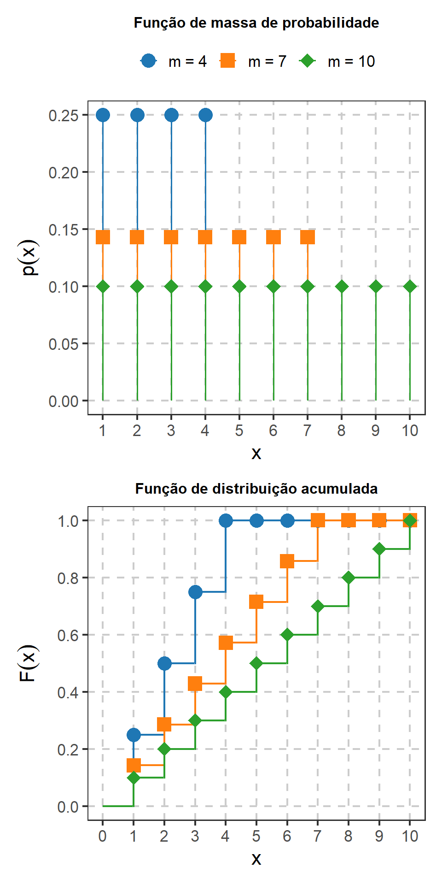
1 Revisão de Probabilidade e Modelos Probabilísticos
Este capítulo revisa conceitos de Probabilidade e modelos probabilísticos que serão utilizados ao longo do estudo de Inferência Estatística. O conteúdo pressupõe uma formação anterior em Probabilidade e concentra-se nas definições, propriedades e relações necessárias aos capítulos seguintes.
A revisão abrange probabilidade condicional, independência, variáveis aleatórias, distribuições, esperança, variância, distribuições conjuntas, função geradora de momentos e modelos probabilísticos discretos e contínuos. O objetivo é recuperar uma linguagem probabilística comum para o desenvolvimento da inferência, sem reproduzir integralmente os conteúdos de uma disciplina de Probabilidade (Dantas, 1997; Magalhães, 2006; Meyer, 1983).
NotaDelimitação do capítulo
Neste capítulo, as distribuições e os modelos probabilísticos são tratados como objetos conhecidos da teoria da Probabilidade. Conceitos propriamente inferenciais, como parâmetro desconhecido, modelo estatístico, verossimilhança, estimação, intervalos de confiança e testes de hipóteses, serão introduzidos posteriormente.
Resultados sobre convergência, Lei dos Grandes Números, Teorema Central do Limite, lema de Slutsky, método delta e ordens estocásticas serão reunidos no capítulo Resultados Matemáticos e Assintóticos para Inferência.
1.1 Probabilidade e condicionamento
1.1.1 Experimentos aleatórios, espaço amostral e eventos
Um experimento aleatório é um procedimento cujo resultado não pode ser determinado antecipadamente, embora seja possível especificar o conjunto de resultados que podem ocorrer.
O espaço amostral, denotado por \(\Omega\), é o conjunto dos resultados possíveis do experimento. Um evento é um subconjunto de \(\Omega\).
Por exemplo, no lançamento de um dado de seis faces,
\[ \Omega=\{1,2,3,4,5,6\}. \]
O evento
\[ A=\{2,4,6\} \]
representa a ocorrência de um resultado par.
As operações entre eventos seguem as operações usuais entre conjuntos. Para eventos \(A\) e \(B\):
- \(A\cup B\) representa a ocorrência de pelo menos um dos eventos;
- \(A\cap B\) representa a ocorrência simultânea de \(A\) e \(B\);
- \(A^c\) representa a não ocorrência de \(A\);
- \(A\setminus B\) representa a ocorrência de \(A\) sem a ocorrência de \(B\).
Dois eventos são mutuamente exclusivos quando
\[ A\cap B=\varnothing. \]
1.1.2 Probabilidade
Uma medida de probabilidade \(P\) associa a cada evento \(A\) um número \(P(A)\) que representa sua probabilidade de ocorrência. Suas propriedades básicas são
\[ P(A)\geq0, \]
\[ P(\Omega)=1 \]
e, para uma sequência de eventos mutuamente exclusivos \(A_1,A_2,\ldots\),
\[ P\left( \bigcup_{i=1}^{\infty}A_i \right) = \sum_{i=1}^{\infty}P(A_i). \]
Dessas propriedades decorrem relações utilizadas com frequência, como
\[ P(A^c)=1-P(A) \]
e
\[ P(A\cup B) = P(A)+P(B)-P(A\cap B). \]
Se
\[ A\subseteq B, \]
então
\[ P(A)\leq P(B). \]
Em espaços amostrais finitos com resultados equiprováveis,
\[ P(A) = \frac{|A|}{|\Omega|}, \]
em que \(|A|\) e \(|\Omega|\) representam, respectivamente, o número de elementos de \(A\) e de \(\Omega\) (Dantas, 1997; Meyer, 1983).
1.1.3 Revisão de combinatória
Em problemas com resultados equiprováveis, o cálculo de probabilidades pode depender da contagem dos resultados possíveis. Nesta revisão, serão utilizados principalmente o princípio multiplicativo, o fatorial e os coeficientes binomial e multinomial.
Se um procedimento pode ser realizado de \(n_1\) formas em uma primeira etapa e, para cada uma delas, de \(n_2\) formas em uma segunda etapa, então o número de resultados possíveis é
\[ n_1n_2. \]
Para \(n\) objetos distintos, o número de ordenações possíveis é
\[ n!. \]
O número de maneiras de selecionar \(k\) elementos dentre \(n\), sem considerar a ordem, é
\[ \binom{n}{k} = \frac{n!}{k!(n-k)!}, \qquad k=0,1,\ldots,n. \]
Se \(n\) elementos são distribuídos em \(m\) categorias de tamanhos
\[ n_1,\ldots,n_m, \]
com
\[ n_1+\cdots+n_m=n, \]
o número de configurações é dado pelo coeficiente multinomial
\[ \binom{n}{n_1,\ldots,n_m} = \frac{n!}{n_1!\cdots n_m!}. \]
DicaUso posterior
Os coeficientes binomial e multinomial aparecem diretamente nas funções de probabilidade das distribuições binomial, hipergeométrica e multinomial. Nesta revisão, a combinatória será utilizada como ferramenta para descrever esses modelos, sem desenvolver novamente técnicas mais específicas de contagem.
1.1.4 Probabilidade condicional
A informação de que um evento ocorreu pode alterar a probabilidade atribuída a outro evento. Se \(P(B)>0\), a probabilidade condicional de \(A\) dado \(B\) é
\[ P(A\mid B) = \frac{P(A\cap B)}{P(B)}. \]
A expressão representa a probabilidade de \(A\) quando o espaço de possibilidades é restringido pela ocorrência de \(B\).
Da definição decorre a regra do produto:
\[ P(A\cap B) = P(A\mid B)P(B). \]
Quando \(P(A)>0\), também podemos escrever
\[ P(A\cap B) = P(B\mid A)P(A). \]
Para eventos \(A_1,\ldots,A_n\),
\[ P(A_1\cap\cdots\cap A_n) = P(A_1) P(A_2\mid A_1) \cdots P(A_n\mid A_1\cap\cdots\cap A_{n-1}), \]
desde que as probabilidades condicionais envolvidas estejam definidas (Magalhães, 2006; Ross, 2006).
1.1.5 Lei da probabilidade total
Considere uma partição do espaço amostral formada pelos eventos
\[ B_1,\ldots,B_k, \]
tais que
\[ B_i\cap B_j=\varnothing, \qquad i\neq j, \]
e
\[ \bigcup_{j=1}^k B_j=\Omega. \]
Se
\[ P(B_j)>0, \qquad j=1,\ldots,k, \]
então, para qualquer evento \(A\),
\[ P(A) = \sum_{j=1}^k P(A\mid B_j)P(B_j). \]
A probabilidade de \(A\) é decomposta segundo as diferentes partes do espaço amostral.
1.1.6 Teorema de Bayes
Considerando a mesma partição \(B_1,\ldots,B_k\), se \(P(A)>0\), então
\[ P(B_j\mid A) = \frac{ P(A\mid B_j)P(B_j) }{ \displaystyle \sum_{\ell=1}^k P(A\mid B_\ell)P(B_\ell) }. \]
O teorema de Bayes permite inverter o condicionamento quando são conhecidas as probabilidades \(P(B_j)\) e \(P(A\mid B_j)\).
Considere uma condição genética presente em \(2\%\) de uma população. Um teste apresenta sensibilidade de \(95\%\) e produz resultado positivo em \(5\%\) das pessoas que não apresentam a condição.
Se \(G\) representa a presença da condição e \(T\) representa um resultado positivo no teste, então
\[ P(G)=0{,}02, \]
\[ P(T\mid G)=0{,}95 \]
e
\[ P(T\mid G^c)=0{,}05. \]
Pela lei da probabilidade total,
\[ P(T) = P(T\mid G)P(G) + P(T\mid G^c)P(G^c). \]
Logo,
\[ P(T) = 0{,}95(0{,}02) + 0{,}05(0{,}98) = 0{,}068. \]
Aplicando o teorema de Bayes,
\[ P(G\mid T) = \frac{ P(T\mid G)P(G) }{ P(T) } \]
e, portanto,
\[ P(G\mid T) = \frac{0{,}95(0{,}02)}{0{,}068} \approx 0{,}279. \]
A probabilidade de uma pessoa apresentar a condição genética (G) dado que recebeu um resultado positivo no teste (T) não coincide com a sensibilidade do teste. O cálculo também depende da frequência da condição na população e da probabilidade de resultado positivo entre as pessoas que não apresentam a condição.
1.1.7 Independência de eventos
Dois eventos \(A\) e \(B\) são independentes quando
\[ P(A\cap B) = P(A)P(B). \]
Se \(P(B)>0\), essa condição equivale a
\[ P(A\mid B)=P(A). \]
Nesse caso, a informação de que \(B\) ocorreu não altera a probabilidade atribuída a \(A\).
Independência não deve ser confundida com exclusão mútua. Se \(A\) e \(B\) são mutuamente exclusivos e ambos possuem probabilidade positiva,
\[ P(A\cap B)=0, \]
enquanto
\[ P(A)P(B)>0. \]
Portanto, eventos mutuamente exclusivos com probabilidades positivas não são independentes.
Para eventos
\[ A_1,\ldots,A_n, \]
a independência conjunta exige que, para todo subconjunto de índices
\[ \{i_1,\ldots,i_r\}, \]
tenhamos
\[ P(A_{i_1}\cap\cdots\cap A_{i_r}) = \prod_{j=1}^rP(A_{i_j}). \]
A independência aos pares, isoladamente, não garante independência conjunta (Dantas, 1997; Magalhães, 2006).
1.2 Variáveis aleatórias e distribuições
Uma variável aleatória associa valores numéricos aos resultados de um experimento aleatório. Sua distribuição descreve quais valores podem ocorrer e como a probabilidade é distribuída entre esses valores ou conjuntos de valores.
Ao longo do livro, letras maiúsculas, como \(X\), \(Y\) e \(Z\), representarão variáveis aleatórias. Letras minúsculas, como \(x\), \(y\) e \(z\), representarão valores possíveis ou observados dessas variáveis.
1.2.1 Função de distribuição
A função de distribuição acumulada de uma variável aleatória \(X\) é definida por
\[ F_X(x) = P(X\leq x), \qquad x\in\mathbb R. \]
Toda função de distribuição satisfaz:
- \(F_X\) é não decrescente;
- \(F_X\) é contínua à direita;
- \(F_X(x)\to0\) quando \(x\to-\infty\);
- \(F_X(x)\to1\) quando \(x\to+\infty\).
A função \(F_X\) caracteriza completamente a distribuição de \(X\) (Rice, 2007, caps. 1–2; Ramachandran; Tsokos, 2021, sec. 3.1).
1.2.2 Quantis
Para
\[ u\in(0,1), \]
o quantil de ordem \(u\) pode ser definido por
\[ F_X^{-1}(u) = \inf\{x:F_X(x)\geq u\}. \]
Essa definição é válida tanto para distribuições contínuas quanto para distribuições discretas.
A mediana, por exemplo, está associada ao quantil de ordem
\[ u=0{,}5. \]
Quantis serão utilizados posteriormente na construção de intervalos e regiões associados a distribuições amostrais.
1.2.3 Variáveis aleatórias discretas
Uma variável aleatória \(X\) é discreta quando assume valores em um conjunto finito ou enumerável.
Sua distribuição pode ser descrita por uma função de massa de probabilidade,
\[ p_X(x) = P(X=x), \]
que satisfaz
\[ p_X(x)\geq0 \]
e
\[ \sum_x p_X(x)=1. \]
O suporte de \(X\) é o conjunto dos valores aos quais a função de massa de probabilidade atribui probabilidade positiva. Neste livro, o suporte de \(X\) será representado pela letra maiúscula caligráfica
\[ \mathcal X. \]
Assim,
\[ \mathcal X = \{x:p_X(x)>0\}. \]
Por exemplo, se \(X\) é uma variável de contagem que pode assumir qualquer valor inteiro não negativo, então
\[ \mathcal X = \{0,1,2,\ldots\}. \]
A função de distribuição é obtida acumulando as probabilidades:
\[ F_X(x) = \sum_{t\leq x}p_X(t). \]
Como consequência, a função de distribuição de uma variável discreta apresenta saltos nos valores que recebem probabilidade positiva.
1.2.4 Variáveis aleatórias absolutamente contínuas
Uma variável aleatória \(X\) é absolutamente contínua quando existe uma função de densidade \(f_X\) tal que
\[ F_X(x) = \int_{-\infty}^{x}f_X(t)\,dt, \]
com
\[ f_X(x)\geq0 \]
e
\[ \int_{-\infty}^{\infty} f_X(x)\,dx = 1. \]
Também utilizaremos
\[ \mathcal X \]
para representar o suporte de uma variável aleatória absolutamente contínua \(X\). Neste caso, o suporte será entendido como o conjunto de valores admissíveis para \(X\) em que a densidade é positiva, desconsiderando diferenças em conjuntos de probabilidade nula.
Por exemplo, se \(X\) representa um tempo de espera estritamente positivo, então
\[ \mathcal X = (0,\infty). \]
Nesse caso,
\[ P(a<X\leq b) = \int_a^b f_X(x)\,dx. \]
Para qualquer valor isolado \(x\),
\[ P(X=x)=0. \]
A probabilidade pontual é nula porque conjuntos unitários possuem comprimento nulo, e não simplesmente porque uma variável contínua pode assumir infinitos valores (Ramachandran; Tsokos, 2021, secs. 3.1–3.2; Rice, 2007, cap. 2).
Em modelos paramétricos, o suporte pode depender do parâmetro. Quando for necessário explicitar essa dependência, utilizaremos uma notação como
\[ \mathcal X_\theta. \]
Essa característica será retomada posteriormente, pois algumas condições de regularidade utilizadas em Inferência Estatística pressupõem que o suporte seja comum aos diferentes valores possíveis do parâmetro.
1.2.5 Função indicadora
Para um conjunto \(A\), a função indicadora de \(A\) é definida por
\[ \mathbf 1_A(x) = \begin{cases} 1, & x\in A,\\ 0, & x\notin A. \end{cases} \]
Quando o conjunto considerado é o suporte \(\mathcal X\) de uma variável aleatória \(X\), escreveremos
\[ \mathbf 1_{\mathcal X}(x) = \begin{cases} 1, & x\in\mathcal X,\\ 0, & x\notin\mathcal X. \end{cases} \]
Essa notação permite incorporar diretamente o suporte à expressão de uma função de massa de probabilidade ou de uma densidade.
No caso discreto, uma função de massa de probabilidade poderá ser escrita na forma
\[ p_X(x) = h(x)\mathbf 1_{\mathcal X}(x), \]
indicando que
\[ p_X(x) = \begin{cases} h(x), & x\in\mathcal X,\\ 0, & x\notin\mathcal X. \end{cases} \]
De forma análoga, para uma variável aleatória absolutamente contínua, uma densidade poderá ser escrita como
\[ f_X(x) = h(x)\mathbf 1_{\mathcal X}(x), \]
isto é,
\[ f_X(x) = \begin{cases} h(x), & x\in\mathcal X,\\ 0, & x\notin\mathcal X. \end{cases} \]
A função indicadora permite, portanto, apresentar em uma única expressão a forma da função de massa ou da densidade e o suporte ao qual ela está associada. Essa notação será utilizada sistematicamente na apresentação dos modelos probabilísticos deste capítulo.
A função indicadora também permite representar contagens de ocorrências. Considere os eventos
\[ A_1,\ldots,A_n, \]
e defina
\[ I_i = \mathbf 1_{A_i}. \]
Então,
\[ I_i = \begin{cases} 1, & \text{se }A_i\text{ ocorre},\\ 0, & \text{caso contrário}. \end{cases} \]
A soma
\[ R = \sum_{i=1}^n I_i = \sum_{i=1}^n \mathbf 1_{A_i} \]
representa o número de ocorrências dos eventos considerados.
Consequentemente,
\[ \frac{R}{n} = \frac{1}{n} \sum_{i=1}^n \mathbf 1_{A_i} \]
representa a proporção de ocorrências.
Essa representação será utilizada na distribuição binomial e, posteriormente, permitirá relacionar contagens, proporções e médias de variáveis Bernoulli.
1.2.6 Funções de variáveis aleatórias
Se \(X\) é uma variável aleatória e
\[ Y=g(X), \]
então \(Y\) também é uma variável aleatória.
Sua distribuição depende da distribuição de \(X\) e da transformação \(g\). Uma forma geral de obtê-la consiste em utilizar sua função de distribuição:
\[ F_Y(y) = P(Y\leq y) = P\{g(X)\leq y\}. \]
Métodos específicos para transformações de variáveis aleatórias serão retomados posteriormente neste capítulo.
1.3 Esperança, variância e momentos
1.3.1 Esperança
A esperança matemática de uma variável aleatória representa uma média ponderada de seus possíveis valores segundo a distribuição de probabilidade.
No caso discreto,
\[ E(X) = \sum_xxp_X(x), \]
desde que a soma esteja bem definida.
No caso absolutamente contínuo,
\[ E(X) = \int_{-\infty}^{\infty} xf_X(x)\,dx, \]
desde que a integral esteja bem definida.
Mais geralmente, para uma função \(g\),
\[ E\{g(X)\} = \sum_xg(x)p_X(x) \]
no caso discreto e
\[ E\{g(X)\} = \int_{-\infty}^{\infty} g(x)f_X(x)\,dx \]
no caso absolutamente contínuo.
A esperança é linear. Para constantes \(a_1,\ldots,a_n\) e \(b\),
\[ E\left( \sum_{i=1}^na_iX_i+b \right) = \sum_{i=1}^na_iE(X_i)+b. \]
Essa propriedade não exige independência entre as variáveis.
1.3.2 Momentos
O momento de ordem \(r\) em torno da origem é
\[ E(X^r), \]
quando existe.
O momento centrado (na média) de ordem \(r\) é
\[ E\left[ \{X-E(X)\}^r \right]. \]
A média corresponde ao primeiro momento em torno da origem. A variância corresponde ao segundo momento centrado.
Medidas como assimetria e curtose são construídas a partir de momentos centrais padronizados (Rice, 2007, sec. 4.1; Ramachandran; Tsokos, 2021, secs. 3.1 e 3.3).
1.3.3 Variância
A variância de \(X\) é
\[ \operatorname{Var}(X) = E\left[ \{X-E(X)\}^2 \right]. \]
Uma forma equivalente é
\[ \operatorname{Var}(X) = E(X^2)-[E(X)]^2. \]
Para constantes \(a\) e \(b\),
\[ \operatorname{Var}(aX+b) = a^2\operatorname{Var}(X). \] A raiz quadrada da variância,
\[ \operatorname{DP}(X) = \sqrt{\operatorname{Var}(X)}, \]
é o desvio-padrão da distribuição.
1.4 Distribuições conjuntas e dependência
Muitos problemas probabilísticos envolvem mais de uma variável aleatória considerada simultaneamente. Nesses casos, além de descrever o comportamento individual de cada variável, é necessário estudar como elas se comportam conjuntamente e como se relacionam.
Variáveis aleatórias
\[ X_1,\ldots,X_k \]
consideradas conjuntamente podem ser reunidas no vetor aleatório
\[ \mathbf X = (X_1,\ldots,X_k)^\mathsf T. \]
A distribuição conjunta descreve o comportamento probabilístico de suas componentes consideradas simultaneamente. A partir dela, podem ser obtidas distribuições marginais e condicionais e estudadas relações de dependência entre as variáveis.
Quando forem consideradas apenas duas variáveis aleatórias, utilizaremos a notação \(X\) e \(Y\).
1.4.1 Distribuição conjunta
Considere duas variáveis aleatórias \(X\) e \(Y\), com suportes \(\mathcal X\) e \(\mathcal Y\), respectivamente. Os pares formados por seus valores pertencem ao produto cartesiano
\[ \mathcal X\times\mathcal Y. \]
A distribuição conjunta descreve o comportamento probabilístico de \(X\) e \(Y\) consideradas simultaneamente. Sua função de distribuição conjunta é definida por
\[ F_{X,Y}(x,y) = P(X\leq x,\;Y\leq y). \]
O suporte conjunto de \((X,Y)\) é formado pelos pares
\[ (x,y)\in\mathcal X\times\mathcal Y \]
admissíveis sob a distribuição conjunta considerada.
O suporte conjunto não precisa coincidir com todo o produto cartesiano
\[ \mathcal X\times\mathcal Y. \]
Dependendo da relação entre \(X\) e \(Y\), apenas parte das combinações entre seus valores individuais pode pertencer ao suporte conjunto.
No caso discreto, a distribuição conjunta pode ser descrita pela função de massa de probabilidade
\[ p_{X,Y}(x,y) = P(X=x,Y=y), \]
que satisfaz
\[ p_{X,Y}(x,y)\geq0 \]
e
\[ \sum_x\sum_y p_{X,Y}(x,y) = 1. \]
No caso absolutamente contínuo, a distribuição conjunta é descrita por uma densidade
\[ f_{X,Y}(x,y)\geq0, \]
com
\[ \int_{-\infty}^{\infty} \int_{-\infty}^{\infty} f_{X,Y}(x,y)\,dx\,dy = 1. \]
Para uma região
\[ A\subseteq\mathbb R^2, \]
temos
\[ P\{(X,Y)\in A\} = \iint_A f_{X,Y}(x,y)\,dx\,dy. \]
A mesma ideia se estende a vetores aleatórios com mais de duas componentes.
1.4.2 Distribuições marginais
A distribuição marginal descreve o comportamento de uma componente do vetor sem condicionar aos valores das demais.
No caso discreto,
\[ p_X(x) = \sum_y p_{X,Y}(x,y) \]
e
\[ p_Y(y) = \sum_x p_{X,Y}(x,y). \]
No caso absolutamente contínuo,
\[ f_X(x) = \int_{-\infty}^{\infty} f_{X,Y}(x,y)\,dy \]
e
\[ f_Y(y) = \int_{-\infty}^{\infty} f_{X,Y}(x,y)\,dx. \]
A soma ou integração elimina da distribuição conjunta a variável que não aparece na distribuição marginal desejada.
1.4.3 Distribuições condicionais
A distribuição condicional descreve o comportamento de uma variável quando o valor de outra é conhecido.
No caso discreto, se
\[ p_Y(y)>0, \]
então
\[ p_{X\mid Y}(x\mid y) = \frac{ p_{X,Y}(x,y) }{ p_Y(y) }. \]
Para cada \(y\) fixado,
\[ \sum_x p_{X\mid Y}(x\mid y) = 1. \]
No caso absolutamente contínuo, se
\[ f_Y(y)>0, \]
então
\[ f_{X\mid Y}(x\mid y) = \frac{ f_{X,Y}(x,y) }{ f_Y(y) }, \]
com
\[ \int_{-\infty}^{\infty} f_{X\mid Y}(x\mid y)\,dx = 1. \]
A distribuição conjunta pode ser recuperada a partir de uma marginal e de uma condicional. No caso discreto,
\[ p_{X,Y}(x,y) = p_{X\mid Y}(x\mid y)p_Y(y), \]
e, no caso absolutamente contínuo,
\[ f_{X,Y}(x,y) = f_{X\mid Y}(x\mid y)f_Y(y). \]
Distribuições condicionais serão utilizadas posteriormente em resultados como o teorema de Rao–Blackwell e no algoritmo EM (Rice, 2007, secs. 3.2–3.5; Ramachandran; Tsokos, 2021, sec. 3.3).
Considere duas variáveis aleatórias \(X\) e \(Y\) com função de probabilidade conjunta dada por
| \(X\) | \(Y=0\) | \(Y=1\) |
|---|---|---|
| \(0\) | \(0{,}20\) | \(0{,}10\) |
| \(1\) | \(0{,}30\) | \(0{,}40\) |
A distribuição marginal de \(X\) é
\[ P(X=0) = 0{,}20+0{,}10 = 0{,}30 \]
e
\[ P(X=1) = 0{,}30+0{,}40 = 0{,}70. \]
Para \(Y\),
\[ P(Y=0) = 0{,}20+0{,}30 = 0{,}50 \]
e
\[ P(Y=1) = 0{,}10+0{,}40 = 0{,}50. \]
Condicionando em \(Y=1\),
\[ P(X=1\mid Y=1) = \frac{ P(X=1,Y=1) }{ P(Y=1) } = \frac{0{,}40}{0{,}50} = 0{,}80. \]
Portanto,
\[ P(X=1)=0{,}70 \]
e
\[ P(X=1\mid Y=1)=0{,}80. \]
A informação de que \(Y=1\) altera a distribuição atribuída a \(X\).
1.4.4 Independência de variáveis aleatórias
As variáveis aleatórias \(X\) e \(Y\) são independentes quando
\[ P(X\in A,Y\in B) = P(X\in A)P(Y\in B) \]
para todos os conjuntos admissíveis \(A\) e \(B\).
No caso discreto, essa condição equivale a
\[ p_{X,Y}(x,y) = p_X(x)p_Y(y) \]
para todos os valores possíveis de \(x\) e \(y\).
No caso absolutamente contínuo,
\[ f_{X,Y}(x,y) = f_X(x)f_Y(y) \]
quase sempre.
Se \(X\) e \(Y\) são independentes e as esperanças envolvidas existem,
\[ E\{g(X)h(Y)\} = E\{g(X)\}E\{h(Y)\}. \]
Em particular,
\[ E(XY) = E(X)E(Y). \]
A recíproca não é válida em geral. A igualdade de determinados momentos não é suficiente para estabelecer independência (Rice, 2007, sec. 3.4; Ramachandran; Tsokos, 2021, secs. 2.4 e 3.3).
1.4.5 Independência de várias variáveis
As variáveis
\[ X_1,\ldots,X_n \]
são mutuamente independentes quando, para quaisquer conjuntos
\[ A_1,\ldots,A_n, \]
temos
\[ P(X_1\in A_1,\ldots,X_n\in A_n) = \prod_{i=1}^n P(X_i\in A_i). \]
No caso discreto,
\[ p_{X_1,\ldots,X_n} (x_1,\ldots,x_n) = \prod_{i=1}^n p_{X_i}(x_i). \]
No caso absolutamente contínuo,
\[ f_{X_1,\ldots,X_n} (x_1,\ldots,x_n) = \prod_{i=1}^n f_{X_i}(x_i) \]
quase sempre.
1.4.6 Variáveis independentes e identicamente distribuídas
Se, além de mutuamente independentes, as variáveis
\[ X_1,\ldots,X_n \]
possuem a mesma distribuição, dizemos que são independentes e identicamente distribuídas.
Formalmente, existe uma função de distribuição comum \(F\) tal que
\[ F_{X_i}(x) = F(x), \qquad i=1,\ldots,n. \]
Nesse caso, escrevemos
\[ X_1,\ldots,X_n \overset{\mathrm{iid}}{\sim} F. \]
A sigla i.i.d. corresponde à expressão independentes e identicamente distribuídas.
NotaEstrutura i.i.d.
A notação
\[ X_1,\ldots,X_n \overset{\mathrm{iid}}{\sim} F \]
reúne duas condições distintas:
- \(X_1,\ldots,X_n\) são mutuamente independentes;
- todas possuem a mesma distribuição \(F\).
Serem identicamente distribuídas não significa que as variáveis assumam os mesmos valores. Significa que todas são regidas pela mesma distribuição probabilística.
A estrutura i.i.d. será utilizada repetidamente ao longo do livro e, posteriormente, aparecerá na definição usual de uma amostra aleatória. Ela representa uma hipótese específica sobre o mecanismo probabilístico de geração das observações e não se aplica a todos os processos de obtenção de dados.
1.4.7 Covariância e correlação
A covariância entre \(X\) e \(Y\) é
\[ \operatorname{Cov}(X,Y) = E \left[ \{X-E(X)\} \{Y-E(Y)\} \right]. \]
Equivalentemente,
\[ \operatorname{Cov}(X,Y) = E(XY)-E(X)E(Y). \]
A covariância descreve a direção da associação linear entre as duas variáveis.
Se \(X\) e \(Y\) são independentes e possuem segundos momentos finitos,
\[ E(XY)=E(X)E(Y) \]
e, portanto,
\[ \operatorname{Cov}(X,Y)=0. \]
Assim,
\[ X\perp Y \quad\Longrightarrow\quad \operatorname{Cov}(X,Y)=0. \]
A implicação inversa não é válida em geral.
A covariância depende das unidades de medida. Uma medida adimensional da associação linear é o coeficiente de correlação,
\[ \rho_{X,Y} = \operatorname{Corr}(X,Y) = \frac{ \operatorname{Cov}(X,Y) }{ \sqrt{\operatorname{Var}(X)} \sqrt{\operatorname{Var}(Y)} }, \]
desde que
\[ \operatorname{Var}(X)>0 \]
e
\[ \operatorname{Var}(Y)>0. \]
O coeficiente satisfaz
\[ -1\leq\rho_{X,Y}\leq1. \]
Valores positivos correspondem a associação linear positiva, valores negativos a associação linear negativa e
\[ \rho_{X,Y}=0 \]
indica ausência de associação linear. Correlação nula, entretanto, não implica ausência de dependência.
NotaIndependência e correlação
Independência implica correlação nula quando as variâncias existem. A implicação inversa não vale para distribuições arbitrárias.
Para variáveis conjuntamente normais, correlação nula implica independência.
1.4.8 Variância de combinações lineares
Para variáveis com segundos momentos finitos,
\[ \operatorname{Var} \left( \sum_{i=1}^n a_iX_i \right) = \sum_{i=1}^n a_i^2\operatorname{Var}(X_i) + 2\sum_{i<j} a_ia_j \operatorname{Cov}(X_i,X_j). \]
Se as variáveis são independentes, as covariâncias cruzadas são nulas e
\[ \operatorname{Var} \left( \sum_{i=1}^n a_iX_i \right) = \sum_{i=1}^n a_i^2\operatorname{Var}(X_i). \]
Esse resultado será utilizado repetidamente na obtenção das variâncias de somas, médias e outras estatísticas construídas a partir de observações independentes (Rice, 2007, secs. 4.2–4.3; Ramachandran; Tsokos, 2021, sec. 3.3.1).
1.4.9 Esperança condicional
A distribuição condicional permite definir momentos condicionais.
No caso discreto,
\[ E(X\mid Y=y) = \sum_x x\,p_{X\mid Y}(x\mid y), \]
desde que a soma esteja bem definida.
No caso absolutamente contínuo,
\[ E(X\mid Y=y) = \int_{-\infty}^{\infty} x\,f_{X\mid Y}(x\mid y)\,dx. \]
Ao permitir que \(Y\) varie, obtemos a variável aleatória
\[ E(X\mid Y). \]
Mais geralmente,
\[ E\{g(X)\mid Y=y\} \]
é calculada utilizando a distribuição condicional de \(X\) dado \(Y=y\).
Se \(X\) e \(Y\) são independentes e
\[ E|X|<\infty, \]
então
\[ E(X\mid Y) = E(X). \]
ImportanteLei da esperança total
Se \(E|X|<\infty\), então
\[ E(X) = E\{E(X\mid Y)\}. \]
A lei da esperança total permite obter a média não condicional a partir das médias condicionais.
Considere uma variável \(Y\) que identifica dois grupos,
\[ Y\in\{0,1\}, \]
com
\[ P(Y=0)=0{,}6 \]
e
\[ P(Y=1)=0{,}4. \]
Suponha que
\[ E(X\mid Y=0)=10 \]
e
\[ E(X\mid Y=1)=20. \]
Então,
\[ E(X) = E\{E(X\mid Y)\} \]
e
\[ E(X) = 10(0{,}6)+20(0{,}4) = 14. \]
1.4.10 Variância condicional
A variância condicional de \(X\) dado \(Y=y\) é
\[ \operatorname{Var}(X\mid Y=y) = E \left[ \{X-E(X\mid Y=y)\}^2 \mid Y=y \right]. \]
Equivalentemente,
\[ \operatorname{Var}(X\mid Y=y) = E(X^2\mid Y=y) - [E(X\mid Y=y)]^2. \]
Ao permitir que \(Y\) varie, obtém-se a variável aleatória
\[ \operatorname{Var}(X\mid Y). \]
ImportanteLei da variância total
Se \(E(X^2)<\infty\), então
\[ \operatorname{Var}(X) = E\{\operatorname{Var}(X\mid Y)\} + \operatorname{Var}\{E(X\mid Y)\}. \]
A primeira parcela,
\[ E\{\operatorname{Var}(X\mid Y)\}, \]
representa a média das variâncias condicionais. A segunda,
\[ \operatorname{Var}\{E(X\mid Y)\}, \]
representa a variabilidade entre as médias condicionais.
A decomposição separa, portanto, a variabilidade total de \(X\) em uma componente associada à variação dentro das distribuições condicionais e outra associada à variação entre suas médias (Rice, 2007, sec. 4.4; Ramachandran; Tsokos, 2021, sec. 3.3).
Considere novamente
\[ P(Y=0)=0{,}6, \qquad P(Y=1)=0{,}4, \]
com
\[ E(X\mid Y=0)=10 \]
e
\[ E(X\mid Y=1)=20. \]
Suponha ainda que
\[ \operatorname{Var}(X\mid Y=0)=9 \]
e
\[ \operatorname{Var}(X\mid Y=1)=16. \]
A primeira parcela da lei da variância total é
\[ E\{\operatorname{Var}(X\mid Y)\} = 9(0{,}6)+16(0{,}4) = 11{,}8. \]
Como
\[ E(X)=14, \]
a variância das médias condicionais é
\[ \operatorname{Var}\{E(X\mid Y)\} = 0{,}6(10-14)^2 + 0{,}4(20-14)^2 = 24. \]
Portanto,
\[ \operatorname{Var}(X) = 11{,}8+24 = 35{,}8. \]
1.4.11 Vetores de médias e matrizes de covariâncias
Para um vetor aleatório
\[ \mathbf X = (X_1,\ldots,X_k)^\mathsf T, \]
o vetor de médias é
\[ E(\mathbf X) = \begin{pmatrix} E(X_1)\\ \vdots\\ E(X_k) \end{pmatrix}. \]
A matriz de covariâncias é
\[ \boldsymbol\Sigma = \operatorname{Cov}(\mathbf X) = E \left[ \{\mathbf X-E(\mathbf X)\} \{\mathbf X-E(\mathbf X)\}^\mathsf T \right]. \]
Sua forma é
\[ \boldsymbol\Sigma = \begin{pmatrix} \operatorname{Var}(X_1) & \operatorname{Cov}(X_1,X_2) & \cdots & \operatorname{Cov}(X_1,X_k) \\ \operatorname{Cov}(X_2,X_1) & \operatorname{Var}(X_2) & \cdots & \operatorname{Cov}(X_2,X_k) \\ \vdots & \vdots & \ddots & \vdots \\ \operatorname{Cov}(X_k,X_1) & \operatorname{Cov}(X_k,X_2) & \cdots & \operatorname{Var}(X_k) \end{pmatrix}. \]
A diagonal contém as variâncias das componentes e os elementos fora da diagonal contêm as covariâncias entre pares de variáveis.
A matriz de covariâncias é simétrica e positiva semidefinida. Essa representação será retomada no estudo de parâmetros vetoriais, distribuições assintóticas multivariadas e modelos lineares (Rice, 2007, secs. 4.2–4.3; Ramachandran; Tsokos, 2021, sec. 3.3.1).
NotaEm síntese: distribuições conjuntas e dependência
Os principais resultados desta seção podem ser organizados a partir da distribuição conjunta.
A partir de uma distribuição conjunta podem ser obtidas as distribuições marginais de cada componente e, quando as condições necessárias são satisfeitas, suas distribuições condicionais.
A independência corresponde à fatoração da distribuição conjunta. No caso discreto,
\[ p_{X,Y}(x,y) = p_X(x)p_Y(y), \]
e, no caso absolutamente contínuo,
\[ f_{X,Y}(x,y) = f_X(x)f_Y(y) \]
quase sempre.
O condicionamento também permite decompor momentos. A lei da esperança total estabelece que
\[ E(X) = E\{E(X\mid Y)\}, \]
enquanto a lei da variância total fornece
\[ \operatorname{Var}(X) = E\{\operatorname{Var}(X\mid Y)\} + \operatorname{Var}\{E(X\mid Y)\}. \]
Quando várias variáveis são independentes e possuem a mesma distribuição, utilizamos a notação
\[ X_1,\ldots,X_n \overset{\mathrm{iid}}{\sim} F. \]
Essa estrutura será utilizada repetidamente nos modelos probabilísticos apresentados a seguir e, posteriormente, na definição de amostras aleatórias.
1.5 Função geradora de momentos
A função geradora de momentos (fgm) de uma variável aleatória \(X\) é definida por
\[ M_X(t) = E(e^{tX}), \]
desde que essa esperança exista em uma vizinhança de \(t=0\).
No caso discreto,
\[ M_X(t) = \sum_x e^{tx}p_X(x), \]
enquanto, no caso absolutamente contínuo,
\[ M_X(t) = \int_{-\infty}^{\infty} e^{tx}f_X(x)\,dx. \]
A fgm será utilizada neste capítulo para três finalidades: obter momentos, estudar distribuições de somas de variáveis independentes e reconhecer distribuições a partir de sua forma funcional (Rice, 2007, sec. 4.5; Chihara; Hesterberg, 2022, ap. A.8).
1.5.1 Obtenção de momentos
Quando a fgm é finita em uma vizinhança de zero, sua derivada de ordem \(r\) é
\[ M_X^{(r)}(t) = \frac{d^r}{dt^r}M_X(t). \]
Avaliando em \(t=0\),
\[ M_X^{(r)}(0) = E(X^r). \]
Em particular,
\[ M_X'(0) = E(X) \]
e
\[ M_X''(0) = E(X^2). \]
Consequentemente,
\[ \operatorname{Var}(X) = M_X''(0) - [M_X'(0)]^2. \]
Assim, quando a fgm possui uma expressão simples, ela fornece uma forma alternativa de obter os momentos da distribuição.
1.5.2 Transformações lineares
Se
\[ Y=aX+b, \]
então
\[ M_Y(t) = E \left( e^{t(aX+b)} \right). \]
Como
\[ e^{t(aX+b)} = e^{bt}e^{atX}, \]
segue que
\[ M_Y(t) = e^{bt}M_X(at). \]
Essa relação permite obter a fgm de uma transformação linear a partir da FGM da variável original.
1.5.3 Soma de variáveis independentes
Se
\[ X_1,\ldots,X_n \]
são independentes e suas funções geradoras de momentos existem em uma vizinhança de zero, então
\[ M_{X_1+\cdots+X_n}(t) = \prod_{i=1}^nM_{X_i}(t). \]
Se, além disso,
\[ S_n=X_1,\ldots,X_n \overset{\mathrm{iid}}{\sim} X, \]
então
\[ M_{S_n}(t) = M_{X_1+\cdots+X_n}(t) = [M_X(t)]^n. \]
Essa propriedade será utilizada nas seções seguintes para estabelecer relações entre alguns modelos probabilísticos.
1.5.4 Identificação de distribuições
Se duas variáveis aleatórias possuem funções geradoras de momentos que existem e coincidem em uma vizinhança de \(t=0\), então elas possuem a mesma distribuição.
Assim, quando a fgm de uma variável ou de uma soma de variáveis coincide com a fgm de uma distribuição conhecida, essa igualdade pode ser utilizada para identificar sua distribuição.
NotaExistência da fgm
Nem toda distribuição possui função geradora de momentos. Neste capítulo, a FGM será apresentada junto aos modelos em que sua expressão é útil para os desenvolvimentos posteriores.
Não será introduzida uma expressão complicada apenas para completar uma tabela. Quando a FGM de determinado modelo envolver funções especiais que não serão utilizadas no livro, essa forma será omitida.
1.6 Modelos probabilísticos discretos
Modelos probabilísticos discretos descrevem variáveis aleatórias que assumem valores em conjuntos finitos ou enumeráveis. A escolha de uma distribuição depende do mecanismo que produz a variável observada. Um único resultado binário, uma contagem de sucessos, uma amostragem sem reposição, o número de tentativas até determinado evento e o número de ocorrências em um intervalo correspondem a estruturas probabilísticas distintas.
Nesta seção, serão revisadas as distribuições uniforme discreta, Bernoulli, binomial, hipergeométrica, geométrica, binomial negativa e Poisson. Para cada modelo serão apresentados seu mecanismo probabilístico, suporte, função de massa de probabilidade, esperança, variância, função geradora de momentos, situações que podem originar problemas inferenciais e o comportamento gráfico da função de massa e da função de distribuição acumulada (Dantas, 1997; Magalhães, 2006; Ross, 2006).
1.6.1 Distribuição uniforme discreta
A distribuição uniforme discreta descreve situações em que um número finito de resultados possui a mesma probabilidade de ocorrência.
Considere uma variável aleatória \(X\) que pode assumir os valores
\[ x_1,\ldots,x_m, \]
todos com a mesma probabilidade. Sua função de massa de probabilidade é
\[ p_X(x) = \frac{1}{m} \mathbf 1_{\{x_1,\ldots,x_m\}}(x). \]
Um caso particular ocorre quando
\[ X\in\{1,\ldots,m\}. \]
Nesse caso, escrevemos
\[ X\sim\operatorname{U}\{1,\ldots,m\} \]
e
\[ p_X(x) = \frac{1}{m} \mathbf 1_{\{1,\ldots,m\}}(x). \]
A esperança é
\[ E(X) = \frac{m+1}{2}, \]
e a variância é
\[ \operatorname{Var}(X) = \frac{m^2-1}{12}. \]
A função geradora de momentos é
\[ M_X(t) = \frac{1}{m} \sum_{x=1}^m e^{tx}. \]
Para \(t\neq0\), a soma geométrica fornece
\[ M_X(t) = \frac{ e^t(e^{mt}-1) }{ m(e^t-1) }, \]
enquanto
\[ M_X(0)=1. \]
Considere uma população cujos elementos são numerados consecutivamente de \(1\) até um valor máximo desconhecido \(m\). Se um elemento é selecionado aleatoriamente e todos os números possuem a mesma probabilidade de seleção, então
\[ X\sim\operatorname{U}\{1,\ldots,m\}. \]
Um exemplo ocorre quando números de série são atribuídos sequencialmente aos itens produzidos por uma empresa. Se apenas alguns números de série são observados, pode haver interesse em obter informação sobre o número total \(m\) de itens produzidos.
Nesse problema, o mecanismo probabilístico é uniforme discreto e a quantidade que assumirá posteriormente o papel de parâmetro desconhecido é \(m\).
A Figura fig-uniforme-discreta-fmp-fda mostra que todos os valores do suporte possuem a mesma massa de probabilidade. À medida que \(m\) aumenta, essa massa individual diminui, pois a probabilidade total igual a \(1\) é distribuída entre um número maior de valores. A função de distribuição apresenta saltos de mesma magnitude, iguais a \(1/m\). Assim, quanto maior o número de valores possíveis, menores são os saltos da função de distribuição.
1.6.2 Distribuição de Bernoulli
Um ensaio de Bernoulli é um experimento com dois resultados possíveis, representados por \(1\) e \(0\). Convencionalmente, esses resultados são denominados sucesso e fracasso.
Uma variável aleatória \(X\) possui distribuição de Bernoulli com parâmetro
\[ 0<p<1 \]
quando sua função de massa de probabilidade é
\[ p_X(x) = p^x(1-p)^{1-x} \mathbf 1_{\{0,1\}}(x). \]
Escrevemos
\[ X\sim\operatorname{Ber}(p). \]
O parâmetro \(p\) representa a probabilidade de sucesso:
\[ P(X=1)=p, \]
enquanto
\[ P(X=0)=1-p. \]
A esperança é
\[ E(X)=p, \]
e a variância é
\[ \operatorname{Var}(X) = p(1-p). \]
A função geradora de momentos é
\[ M_X(t) = E(e^{tX}). \]
Como \(X\) assume apenas os valores \(0\) e \(1\),
\[ M_X(t) = (1-p)e^0+pe^t, \]
de modo que
\[ M_X(t) = 1-p+pe^t. \]
A função indicadora fornece uma representação direta de uma variável Bernoulli. Para um evento \(A\),
\[ X=\mathbf 1_A \]
possui distribuição de Bernoulli com
\[ p=P(A). \]
Considere uma pesquisa em que cada pessoa entrevistada responde se utiliza ou não determinado serviço público. Defina
\[ X= \begin{cases} 1, & \text{se a pessoa utiliza o serviço},\\ 0, & \text{caso contrário}. \end{cases} \]
Se \(p\) representa a probabilidade de uma pessoa da população utilizar o serviço, então
\[ X\sim\operatorname{Ber}(p). \]
Em uma situação inferencial, podem ser observadas respostas de várias pessoas com o objetivo de obter informação sobre a proporção populacional \(p\) de usuários do serviço.
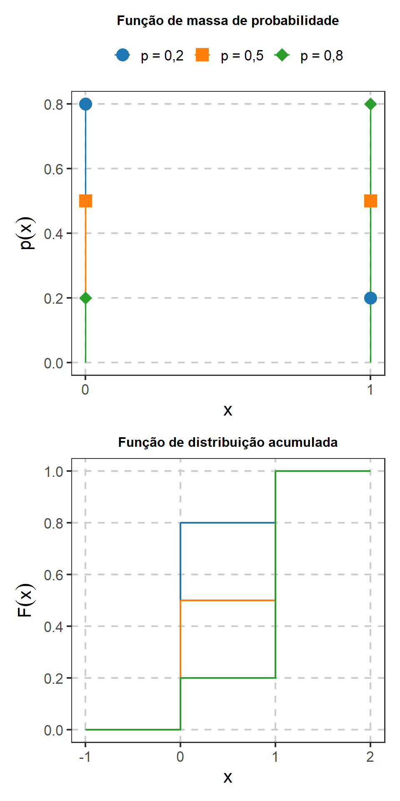
A Figura fig-bernoulli-fmp-fda mostra que o parâmetro \(p\) redistribui a massa entre os dois valores possíveis. Quando \(p\) é pequeno, a maior massa está em \(X=0\); quando \(p\) é grande, concentra-se em \(X=1\). Para \(p=0{,}5\), os dois resultados possuem a mesma probabilidade. Na função de distribuição, o primeiro salto possui magnitude \(1-p\) e ocorre em \(x=0\); o segundo completa a probabilidade acumulada em \(x=1\).
1.6.3 Distribuição binomial
Considere
\[ X_1,\ldots,X_n \overset{\mathrm{iid}}{\sim} \operatorname{Ber}(p). \]
A variável
\[ X = \sum_{i=1}^nX_i \]
representa o número de sucessos nos \(n\) ensaios.
Nesse caso,
\[ X\sim\operatorname{Binom}(n,p), \]
com
\[ n\in\mathbb N \qquad\text{e}\qquad 0<p<1. \]
O suporte é
\[ \mathcal X = \{0,1,\ldots,n\}. \]
Sua função de massa de probabilidade é
\[ p_X(x) = \binom{n}{x} p^x(1-p)^{n-x} \mathbf 1_{\{0,1,\ldots,n\}}(x). \]
Como \(X\) é uma soma de variáveis Bernoulli independentes,
\[ E(X) = \sum_{i=1}^nE(X_i) = np \]
e
\[ \operatorname{Var}(X) = \sum_{i=1}^n\operatorname{Var}(X_i) = np(1-p). \] Além da contagem total de sucessos, a mesma representação permite considerar a proporção de sucessos nos \(n\) ensaios. Como
\[ X = \sum_{i=1}^nX_i, \]
temos
\[ \frac{X}{n} = \frac{1}{n} \sum_{i=1}^nX_i = \overline X. \]
Assim, quando \(X_i\) indica a ocorrência de sucesso no \(i\)-ésimo ensaio, \(X/n\) representa a proporção de sucessos observada nos \(n\) ensaios.
Utilizando a linearidade da esperança,
\[ E\left(\frac{X}{n}\right) = \frac{1}{n}E(X) = p. \]
Da mesma forma,
\[ \operatorname{Var}\left(\frac{X}{n}\right) = \frac{1}{n^2}\operatorname{Var}(X) = \frac{p(1-p)}{n}. \]
Essa relação será retomada posteriormente no estudo da proporção amostral. Ela mostra que a proporção de sucessos pode ser escrita como a média de variáveis Bernoulli independentes.
A função geradora de momentos também decorre da representação como soma. Como
\[ M_{X_i}(t) = 1-p+pe^t, \]
temos
\[ M_X(t) = \prod_{i=1}^nM_{X_i}(t), \]
e, portanto,
\[ M_X(t) = (1-p+pe^t)^n. \]
NotaEstrutura do modelo binomial
A distribuição binomial resulta das seguintes condições:
- o número de ensaios \(n\) é fixado;
- cada ensaio possui dois resultados possíveis;
- os ensaios são independentes;
- a probabilidade de sucesso \(p\) é a mesma em todos os ensaios.
A alteração dessas condições pode exigir outro modelo probabilístico.
Considere uma pesquisa de satisfação realizada com \(n=100\) usuários de determinado serviço. Cada pessoa é classificada como satisfeita ou não satisfeita.
Se as respostas puderem ser representadas por ensaios de Bernoulli independentes com probabilidade de satisfação \(p\), o número total \(X\) de pessoas satisfeitas pode ser modelado por
\[ X\sim\operatorname{Binom}(100,p). \]
O interesse inferencial pode estar na proporção \(p\) de usuários satisfeitos na população. O valor de \(p\) é desconhecido, enquanto \(X\) é observado a partir da amostra.
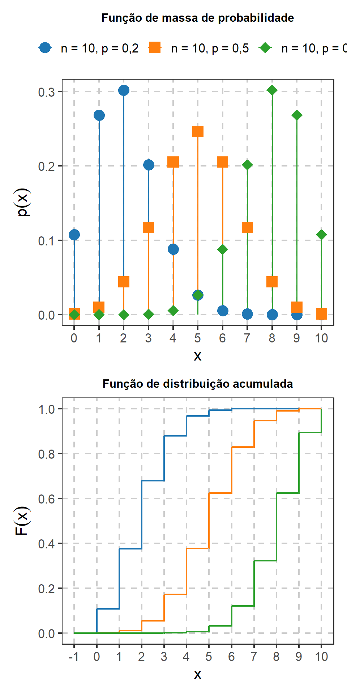
A Figura fig-binomial-fmp-fda mostra como \(p\) modifica a localização e a forma da distribuição para um mesmo número de ensaios. Como
\[ E(X)=np, \]
o aumento de \(p\) desloca a massa de probabilidade para valores maiores de \(x\). Para \(p=0{,}5\), a distribuição é simétrica em torno de \(x=5\). Os casos \(p=0{,}2\) e \(p=0{,}8\) apresentam formas espelhadas, consequência da troca entre as probabilidades de sucesso e fracasso. Na função de distribuição, esse deslocamento aparece na posição em que a probabilidade acumulada cresce.
1.6.4 Distribuição hipergeométrica
A distribuição hipergeométrica descreve o número de sucessos em uma amostra retirada sem reposição de uma população finita.
Considere uma população formada por:
- \(N\) unidades;
- \(M\) unidades classificadas como sucesso;
- \(N-M\) unidades classificadas como fracasso.
Seleciona-se uma amostra de tamanho \(n\) sem reposição e define-se \(X\) como o número de sucessos observados.
Então,
\[ X\sim\text{Hiper}(N,M,n), \]
com
\[ N\in\mathbb N, \qquad 0\leq M\leq N \]
e
\[ 0\leq n\leq N. \]
Defina
\[ \mathcal X = \left\{ \max\{0,n-N+M\}, \ldots, \min\{n,M\} \right\}. \]
A função de massa de probabilidade é
\[ p_X(x) = \frac{ \binom{M}{x} \binom{N-M}{n-x} }{ \binom{N}{n} } \mathbf 1_{\mathcal X}(x). \]
Definindo
\[ p=\frac{M}{N}, \]
a esperança é
\[ E(X)=np, \]
e a variância é
\[ \operatorname{Var}(X) = np(1-p) \frac{N-n}{N-1}. \]
O fator
\[ \frac{N-n}{N-1} \]
é denominado correção para população finita. Ele surge porque as retiradas sem reposição não são independentes.
A função geradora de momentos pode ser escrita como a soma finita
\[ M_X(t) = \sum_{x\in\mathcal X} e^{tx} \frac{ \binom{M}{x} \binom{N-M}{n-x} }{ \binom{N}{n} }. \]
Sua forma será suficiente para esta revisão; não será necessária uma representação adicional por funções especiais.
Considere um lote com \(N=500\) componentes eletrônicos. Uma quantidade desconhecida \(M\) desses componentes apresenta determinado defeito. Uma amostra de \(n=30\) componentes é selecionada sem reposição e \(X\) representa o número de itens defeituosos encontrados.
Condicionalmente ao número \(M\) de componentes defeituosos existentes no lote,
\[ X\sim\text{Hiper}(500,M,30). \]
Em um problema inferencial, a contagem observada \(X\) pode fornecer informação sobre \(M\) ou sobre a proporção
\[ p=\frac{M}{500} \]
de componentes defeituosos no lote.
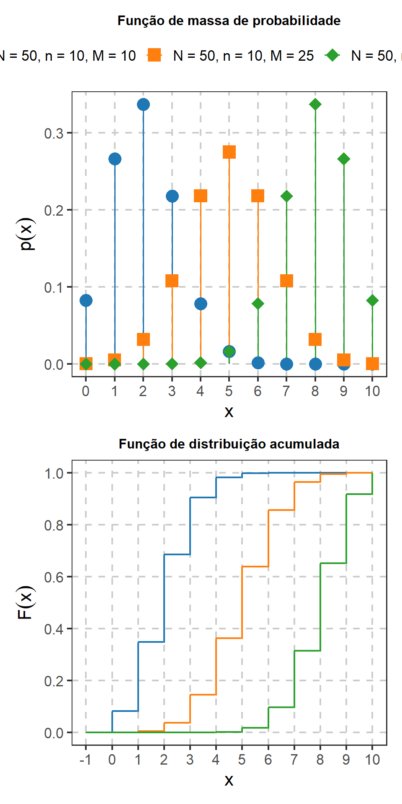
A Figura fig-hipergeometrica-fmp-fda mantém fixados o tamanho da população e o tamanho da amostra e altera o número \(M\) de sucessos existentes na população. Como
\[ E(X) = n\frac{M}{N}, \]
o aumento de \(M\) desloca a distribuição para contagens maiores. Os casos \(M=10\) e \(M=40\) apresentam comportamento aproximadamente espelhado, enquanto \(M=25\) corresponde a uma população com metade das unidades em cada categoria.
1.6.5 Binomial e hipergeométrica
As distribuições binomial e hipergeométrica podem descrever o número de sucessos em \(n\) observações, mas correspondem a mecanismos de obtenção dos dados diferentes.
| Característica | Binomial | Hipergeométrica |
|---|---|---|
| Número de observações | \(n\) | \(n\) |
| Número de sucessos | \(X\) | \(X\) |
| Probabilidade inicial de sucesso | \(p\) | \(p=M/N\) |
| Estrutura | ensaios independentes | amostragem sem reposição |
| População | conceitualmente ilimitada ou reposição | finita |
| Esperança | \(np\) | \(np\) |
| Variância | \(np(1-p)\) | \(np(1-p)\dfrac{N-n}{N-1}\) |
A diferença entre as variâncias decorre da dependência introduzida pela amostragem sem reposição.
Quando \(N\) é grande em relação a \(n\),
\[ \frac{N-n}{N-1} \]
fica próximo de \(1\). Nessa situação, a distribuição binomial pode fornecer uma aproximação para a distribuição hipergeométrica.
A distribuição hipergeométrica, e não a binomial, é o modelo exato para amostragem sem reposição em população finita (Ramachandran; Tsokos, 2021, secs. 3.2.1–3.2.4; Chihara; Hesterberg, 2022, aps. B.1–B.6).
DicaRelação com o experimento da urna
Essa distinção será utilizada posteriormente no estudo da amostragem.
Considere uma urna com \(N\) bolas, das quais \(M\) apresentam determinada característica, por exemplo, a cor vermelha. Se são realizadas \(n\) retiradas sem reposição e \(X\) representa o número de bolas vermelhas observadas, então
\[ X \sim \text{Hiper}(N,M,n). \]
Nesse mecanismo, as retiradas não são independentes, pois a composição da urna é modificada após cada seleção.
Se, em vez disso, cada retirada for realizada com reposição, a probabilidade de observar uma bola vermelha permanece constante,
\[ p=\frac{M}{N}, \]
e as retiradas podem ser representadas por variáveis Bernoulli independentes:
\[ X_1,\ldots,X_n \overset{\mathrm{iid}}{\sim} \operatorname{Ber}(p). \]
Nesse caso,
\[ X = \sum_{i=1}^nX_i \sim \operatorname{Binom}(n,p). \]
Assim, mecanismos de amostragem diferentes podem produzir variáveis com interpretações semelhantes, mas distribuições probabilísticas distintas.
1.6.6 Distribuição geométrica
Considere uma sequência de ensaios de Bernoulli independentes, todos com probabilidade de sucesso
\[ 0<p<1. \]
Se \(X\) representa o número de ensaios necessários até a ocorrência do primeiro sucesso, então
\[ X\sim\text{Geo}(p). \]
O suporte é
\[ \mathcal X = \{1,2,3,\ldots\}, \]
e a função de massa de probabilidade é
\[ p_X(x) = p(1-p)^{x-1} \mathbf 1_{\{1,2,\ldots\}}(x). \]
A esperança é
\[ E(X) = \frac{1}{p}, \]
e a variância é
\[ \operatorname{Var}(X) = \frac{1-p}{p^2}. \]
A função geradora de momentos é
\[ M_X(t) = \sum_{x=1}^{\infty} e^{tx}p(1-p)^{x-1}. \]
Utilizando a soma de uma série geométrica,
\[ M_X(t) = \frac{ pe^t }{ 1-(1-p)e^t }, \]
para
\[ t<-\log(1-p). \]
Considere ligações realizadas por uma central até que um cliente aceite participar de uma pesquisa. Suponha que cada ligação resulte em aceitação com probabilidade \(p\) e que os resultados possam ser tratados como independentes.
Se \(X\) representa o número de ligações necessárias até a primeira aceitação,
\[ X\sim\text{Geo}(p). \]
Em um problema inferencial, os números de ligações necessários em diferentes sequências de contatos podem fornecer informação sobre a probabilidade \(p\) de aceitação de um convite.
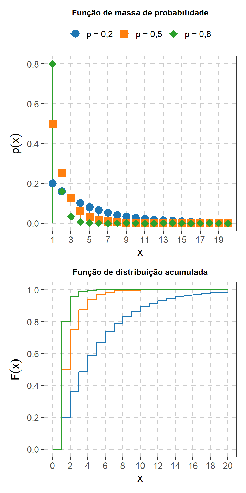
A Figura fig-geometrica-fmp-fda mostra que a distribuição concentra sua maior massa em \(x=1\) e decresce à medida que o número de tentativas aumenta. Para valores maiores de \(p\), o primeiro sucesso tende a ocorrer mais cedo. Essa relação também aparece em
\[ E(X)=\frac{1}{p}. \]
Assim, para \(p=0{,}8\), a probabilidade acumulada aproxima-se rapidamente de \(1\), enquanto para \(p=0{,}2\) a distribuição apresenta uma cauda mais longa.
1.6.6.1 Falta de memória
A distribuição geométrica possui a propriedade de falta de memória. Para inteiros não negativos \(m\) e \(n\),
\[ P(X>m+n\mid X>m) = P(X>n). \]
A expressão indica que, após \(m\) tentativas sem sucesso, o número adicional de tentativas necessário para observar o primeiro sucesso segue o mesmo mecanismo probabilístico do início da sequência.
NotaParametrização
Outra convenção define a distribuição geométrica pelo número de fracassos observados antes do primeiro sucesso, resultando no suporte
\[ \{0,1,2,\ldots\}. \]
Neste livro, \(X\) representa o número total de ensaios até o primeiro sucesso e, portanto, seu suporte começa em \(1\).
1.6.7 Distribuição binomial negativa
A distribuição binomial negativa generaliza a distribuição geométrica.
Considere ensaios de Bernoulli independentes com probabilidade de sucesso
\[ 0<p<1. \]
Se \(X\) representa o número total de ensaios necessários para observar o \(r\)-ésimo sucesso, com
\[ r\in\mathbb N, \]
então
\[ X\sim\operatorname{BN}(r,p). \]
Seu suporte é
\[ \mathcal X = \{r,r+1,r+2,\ldots\}. \]
A função de massa de probabilidade é
\[ p_X(x) = \binom{x-1}{r-1} p^r(1-p)^{x-r} \mathbf 1_{\{r,r+1,\ldots\}}(x). \]
Para que o \(r\)-ésimo sucesso ocorra exatamente no ensaio \(x\), entre os primeiros \(x-1\) ensaios devem ocorrer \(r-1\) sucessos, e o último ensaio deve ser um sucesso.
A esperança é
\[ E(X) = \frac{r}{p}, \]
e a variância é
\[ \operatorname{Var}(X) = \frac{r(1-p)}{p^2}. \]
Como uma variável binomial negativa pode ser representada como a soma de \(r\) variáveis geométricas independentes com parâmetro \(p\), sua função geradora de momentos é
\[ M_X(t) = \left[ \frac{ pe^t }{ 1-(1-p)e^t } \right]^r, \]
para
\[ t<-\log(1-p). \]
Quando
\[ r=1, \]
a distribuição binomial negativa reduz-se à distribuição geométrica.
Considere uma equipe de recrutamento que entra em contato com candidatos até obter \(r=5\) aceitações para determinada etapa de uma seleção.
Se cada contato resulta em aceitação com probabilidade \(p\), sob condições que permitam tratar os resultados como independentes, o número total \(X\) de contatos necessários até a quinta aceitação pode ser modelado por
\[ X\sim\operatorname{BN}(5,p). \]
Os números de contatos necessários em diferentes processos podem ser utilizados para obter informação sobre a probabilidade \(p\) de aceitação.
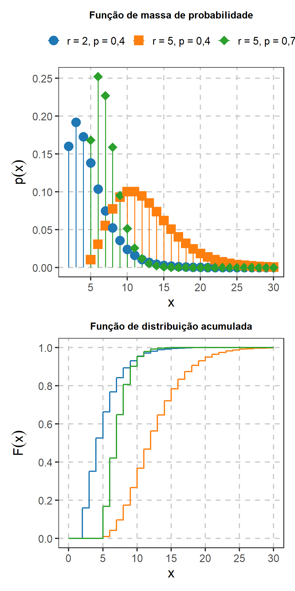
A Figura fig-binomial-negativa-fmp-fda permite observar separadamente os efeitos de \(r\) e \(p\). Mantendo \(p=0{,}4\), a passagem de \(r=2\) para \(r=5\) desloca a distribuição para valores maiores, pois mais sucessos precisam ser acumulados. Mantendo \(r=5\), o aumento de \(p\) de \(0{,}4\) para \(0{,}7\) desloca a distribuição para valores menores, pois os sucessos passam a ocorrer com maior frequência. Essas relações são compatíveis com
\[ E(X)=\frac{r}{p}. \]
1.6.8 Distribuição de Poisson
A distribuição de Poisson é utilizada para modelar o número de ocorrências de determinado evento em uma região de observação, como um intervalo de tempo, uma área, um comprimento ou um volume.
Se
\[ X\sim\operatorname{Poisson}(\lambda), \qquad \lambda>0, \]
o suporte é
\[ \mathcal X = \{0,1,2,\ldots\}, \]
e a função de massa de probabilidade é
\[ p_X(x) = e^{-\lambda} \frac{\lambda^x}{x!} \mathbf 1_{\{0,1,2,\ldots\}}(x). \]
O parâmetro \(\lambda\) representa o número esperado de ocorrências na região de observação considerada.
Quando o número esperado de ocorrências é determinado por uma taxa média por unidade de exposição, é útil distinguir a taxa da quantidade esperada no intervalo observado.
Se \(\rho\) representa a taxa média de ocorrências por unidade de exposição e \(t\) representa a exposição considerada, então
\[ \lambda=\rho t. \]
Assim, \(\rho\) representa uma taxa por unidade de tempo, área, comprimento, volume ou outra medida de exposição, enquanto \(\lambda\) representa o número esperado de ocorrências na exposição específica \(t\).
Por exemplo, se uma taxa média é de \(\rho=3\) ocorrências por hora e o período observado possui \(t=4\) horas, então
\[ \lambda = 3(4) = 12. \]
Nesse período,
\[ X\sim\operatorname{Poisson}(12). \]
A esperança e a variância coincidem:
\[ E(X)=\lambda \]
e
\[ \operatorname{Var}(X)=\lambda. \]
A função geradora de momentos é
\[ M_X(t) = \sum_{x=0}^{\infty} e^{tx} e^{-\lambda} \frac{\lambda^x}{x!}. \]
Reorganizando os termos,
\[ M_X(t) = e^{-\lambda} \sum_{x=0}^{\infty} \frac{(\lambda e^t)^x}{x!}. \]
Como
\[ \sum_{x=0}^{\infty} \frac{a^x}{x!} = e^a, \]
segue que
\[ M_X(t) = \exp \left\{ \lambda(e^t-1) \right\}. \]
Considere uma agência bancária e seja \(X\) o número de clientes atendidos durante o turno da manhã, cuja duração é de \(t\) horas.
Suponha que \(\rho\) represente a taxa média de atendimentos por hora. Se a distribuição de Poisson fornecer uma representação adequada para essa contagem, então
\[ X \sim \operatorname{Poisson}(\lambda), \]
com
\[ \lambda=\rho t. \]
Nesse caso, \(\rho\) representa o número médio de atendimentos por hora, enquanto \(\lambda\) representa o número médio de atendimentos durante todo o turno.
Ao observar as quantidades de clientes atendidos em vários turnos da manhã, pode haver interesse inferencial em obter informação sobre \(\rho\) ou, de forma equivalente quando \(t\) é conhecido, sobre \(\lambda\). Também pode haver interesse em comparar as taxas médias de atendimento entre períodos ou avaliar se uma mudança no processo de trabalho modificou essa taxa.
Os procedimentos utilizados para realizar essas inferências serão desenvolvidos posteriormente.
Considere \(X\) como o número de defeitos encontrados em uma determinada área de uma chapa metálica. Se a distribuição de Poisson fornecer uma representação adequada para essas contagens, \(\lambda\) corresponde ao número esperado de defeitos na área considerada.
Observações realizadas em várias chapas podem ser utilizadas para obter informação sobre essa intensidade média de defeitos.
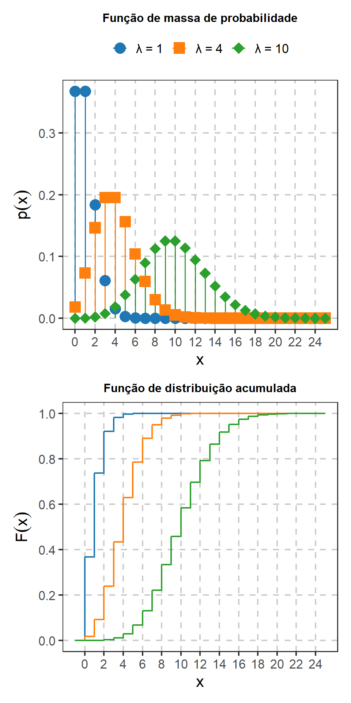
A Figura fig-poisson-fmp-fda mostra que o aumento de \(\lambda\) desloca a distribuição para contagens maiores e também aumenta sua dispersão. Isso decorre das relações
\[ E(X)=\lambda \]
e
\[ \operatorname{Var}(X)=\lambda. \]
Para \(\lambda=1\), a distribuição apresenta maior concentração nos primeiros valores e assimetria à direita. À medida que \(\lambda\) aumenta, a massa se desloca para valores maiores e a forma da distribuição torna-se visualmente menos assimétrica.
1.6.9 Relação entre binomial e Poisson
A distribuição de Poisson pode surgir como limite da distribuição binomial em situações com grande número de ensaios e pequena probabilidade individual de sucesso.
Considere
\[ X_n \sim \operatorname{Binom}(n,p_n). \]
Se
\[ n\to\infty, \]
\[ p_n\to0 \]
e
\[ np_n\to\lambda, \]
então, para cada
\[ x=0,1,2,\ldots, \]
temos
\[ P(X_n=x) \longrightarrow e^{-\lambda} \frac{\lambda^x}{x!}. \]
Assim, em determinadas situações, uma contagem resultante de muitos ensaios com baixa probabilidade individual de sucesso pode ser aproximada por uma distribuição de Poisson.
1.6.10 Soma de variáveis Poisson independentes
Considere variáveis independentes
\[ X_1,\ldots,X_k, \]
com
\[ X_j \sim \operatorname{Poisson}(\lambda_j). \]
A FGM de cada variável é
\[ M_{X_j}(t) = \exp \{ \lambda_j(e^t-1) \}. \]
Pela independência,
\[ M_{\sum_{j=1}^kX_j}(t) = \prod_{j=1}^k M_{X_j}(t). \]
Logo,
\[ M_{\sum_{j=1}^kX_j}(t) = \exp \left\{ \left( \sum_{j=1}^k\lambda_j \right) (e^t-1) \right\}. \]
Essa é a função geradora de momentos de uma distribuição de Poisson com parâmetro
\[ \sum_{j=1}^k\lambda_j. \]
Portanto,
\[ \sum_{j=1}^kX_j \sim \operatorname{Poisson} \left( \sum_{j=1}^k\lambda_j \right). \]
Esse resultado mostra uma das utilidades da função geradora de momentos: propriedades de fechamento de famílias probabilísticas podem ser obtidas pela identificação da FGM resultante.
1.6.11 Relações entre os modelos discretos
Os modelos discretos apresentados nesta seção correspondem a diferentes mecanismos de geração das observações.
| Modelo | Variável modelada | Estrutura probabilística |
|---|---|---|
| Uniforme discreta | resultado entre valores equiprováveis | probabilidades iguais |
| Bernoulli\((p)\) | resultado de um único ensaio | sucesso ou fracasso |
| Binomial\((n,p)\) | número de sucessos em \(n\) ensaios | soma de Bernoulli independentes |
| Hipergeométrica\((N,M,n)\) | número de sucessos em uma amostra | população finita, sem reposição |
| Geométrica\((p)\) | número de ensaios até o primeiro sucesso | sequência de Bernoulli |
| Binomial negativa\((r,p)\) | número de ensaios até o \(r\)-ésimo sucesso | soma de variáveis geométricas |
| Poisson\((\lambda)\) | número de ocorrências em uma região | modelo de contagens |
Algumas relações podem ser representadas por
\[ \operatorname{Ber} \longrightarrow \operatorname{Binom}, \]
pois a distribuição binomial resulta da soma de variáveis Bernoulli independentes, e por
\[ \operatorname{Geo} \longrightarrow \operatorname{BN}, \]
pois a binomial negativa pode ser representada pela soma dos tempos de espera entre sucessivos sucessos.
A distribuição hipergeométrica descreve uma estrutura semelhante à binomial quando a seleção ocorre sem reposição em uma população finita. A distribuição de Poisson, por sua vez, descreve outra classe de problemas de contagem e pode surgir como limite da distribuição binomial.
1.7 Modelo multinomial
1.7.1 Distribuição multinomial
A distribuição multinomial generaliza a distribuição binomial para situações em que cada ensaio pode resultar em uma entre \(m\) categorias mutuamente exclusivas.
Considere \(n\in\mathbb N\) ensaios independentes. Em cada ensaio, o resultado pertence a exatamente uma entre \(m\geq2\) categorias,
\[ 1,\ldots,m, \]
com probabilidades
\[ p_1,\ldots,p_m, \]
tais que
\[ 0<p_j<1, \qquad j=1,\ldots,m, \]
e
\[ \sum_{j=1}^m p_j=1. \]
Com essa convenção, todas as categorias possuem probabilidade positiva de ocorrência.
Se \(X_j\) representa o número de observações classificadas na categoria \(j\), então o vetor
\[ \mathbf X = (X_1,\ldots,X_m)^\mathsf T \]
satisfaz
\[ \sum_{j=1}^mX_j=n. \]
Escrevemos
\[ \mathbf X \sim \operatorname{Multinomial} (n;p_1,\ldots,p_m). \]
1.7.2 Suporte e função de massa conjunta
O suporte da distribuição multinomial é
\[ \mathcal X_n = \left\{ (x_1,\ldots,x_m)\in\mathbb N_0^m: \sum_{j=1}^m x_j=n \right\}. \]
A função de massa de probabilidade conjunta é
\[ p_{\mathbf X}(\mathbf x) = \frac{n!}{x_1!\cdots x_m!} \prod_{j=1}^m p_j^{x_j} \mathbf 1_{\mathcal X_n}(\mathbf x). \]
O coeficiente multinomial
\[ \frac{n!}{x_1!\cdots x_m!} \]
representa o número de sequências de \(n\) ensaios que produzem as contagens
\[ x_1,\ldots,x_m. \]
Quando
\[ m=2, \]
temos
\[ X_2=n-X_1, \]
e o modelo multinomial reduz-se à distribuição binomial.
1.7.3 Esperanças, variâncias e covariâncias
Para cada categoria,
\[ E(X_j)=np_j \]
e
\[ \operatorname{Var}(X_j) = np_j(1-p_j). \]
Para categorias distintas,
\[ \operatorname{Cov}(X_j,X_k) = -np_jp_k, \qquad j\neq k. \]
A covariância negativa decorre da restrição
\[ X_1+\cdots+X_m=n. \]
Como o total \(n\) é fixado, uma observação classificada em determinada categoria deixa de estar disponível para as demais.
O vetor de médias é
\[ E(\mathbf X) = n \begin{pmatrix} p_1\\ \vdots\\ p_m \end{pmatrix}. \]
A matriz de covariâncias possui elementos
\[ \Sigma_{jj} = np_j(1-p_j) \]
na diagonal e
\[ \Sigma_{jk} = -np_jp_k, \qquad j\neq k, \]
fora da diagonal.
1.7.4 Distribuições marginais
Embora as componentes de \(\mathbf X\) não sejam independentes, cada contagem individual possui distribuição binomial.
Para
\[ j=1,\ldots,m, \]
temos
\[ X_j \sim \operatorname{Binom}(n,p_j). \]
Portanto,
\[ P(X_j=x) = \binom{n}{x} p_j^x (1-p_j)^{n-x}, \qquad x=0,\ldots,n. \]
Essa propriedade permite interpretar cada componente separadamente, embora a distribuição conjunta contenha informação adicional sobre a dependência entre as contagens.
1.7.5 Função geradora de momentos conjunta
Para um vetor
\[ \mathbf t = (t_1,\ldots,t_m)^\mathsf T, \]
a função geradora de momentos conjunta é
\[ M_{\mathbf X}(\mathbf t) = E \left[ \exp \left( \sum_{j=1}^m t_jX_j \right) \right]. \]
Para uma distribuição multinomial,
\[ M_{\mathbf X} (t_1,\ldots,t_m) = \left( \sum_{j=1}^m p_je^{t_j} \right)^n. \]
A partir dessa expressão podem ser obtidos os momentos individuais e cruzados por diferenciação em relação às componentes de \(\mathbf t\).
Considere uma pesquisa sobre o principal meio de transporte utilizado para deslocamentos diários. Cada participante é classificado em uma entre três categorias:
- transporte coletivo;
- transporte individual;
- deslocamento a pé ou por bicicleta.
Defina
\[ \mathbf X = (X_1,X_2,X_3)^\mathsf T, \]
em que \(X_j\) representa o número de pessoas classificadas na categoria \(j\) em uma amostra de tamanho \(n\).
Se as respostas forem representadas por ensaios independentes com probabilidades populacionais
\[ p_1,p_2,p_3, \]
então
\[ (X_1,X_2,X_3) \sim \operatorname{Multinomial} (n;p_1,p_2,p_3). \]
Em um problema inferencial, as contagens observadas podem ser utilizadas para obter informação sobre o vetor de proporções populacionais
\[ \mathbf p = (p_1,p_2,p_3)^\mathsf T. \]
O interesse pode estar em uma proporção específica, na comparação entre categorias ou no conjunto completo de proporções.
Considere um processo de controle de qualidade no qual cada produto inspecionado é classificado como
- sem defeito;
- defeito leve;
- defeito grave.
As contagens observadas em uma amostra podem ser representadas por uma distribuição multinomial quando as condições do modelo forem adequadas.
Nesse contexto, pode haver interesse em obter informação sobre as proporções populacionais de produtos pertencentes a cada categoria.
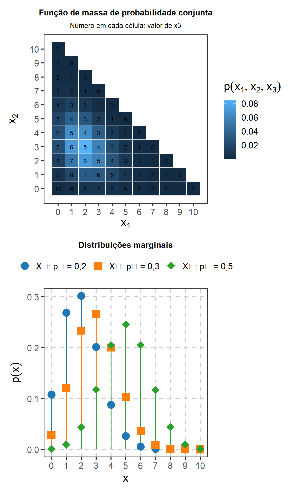
Na parte superior da Figura fig-multinomial, cada posição representa uma combinação possível de contagens
\[ (x_1,x_2,x_3) \]
satisfazendo
\[ x_1+x_2+x_3=10. \]
Como apenas duas contagens podem variar livremente, o valor de \(x_3\) é determinado por
\[ x_3=10-x_1-x_2. \]
A intensidade do preenchimento representa a massa de probabilidade atribuída a cada combinação.
No painel inferior aparecem as três distribuições marginais. Como
\[ X_j\sim\operatorname{Binom}(n,p_j), \]
a categoria com maior probabilidade, \(p_3=0{,}5\), apresenta sua massa concentrada em valores maiores do que as categorias com \(p_1=0{,}2\) e \(p_2=0{,}3\).
A representação também evidencia uma diferença em relação aos modelos discretos univariados: a distribuição multinomial descreve simultaneamente várias contagens relacionadas pela restrição de soma.
1.8 Modelos probabilísticos contínuos
Modelos probabilísticos contínuos descrevem variáveis aleatórias cujos valores pertencem a intervalos ou outros subconjuntos contínuos da reta real. Nesse caso, as probabilidades são determinadas por áreas sob uma função de densidade, enquanto a probabilidade atribuída a qualquer valor isolado é nula.
Nesta seção, serão revisadas as distribuições uniforme, exponencial, gama, normal e beta. Para cada modelo serão apresentados o mecanismo probabilístico, o suporte, a função densidade de probabilidade, a esperança, a variância, a função geradora de momentos quando sua expressão for útil, situações que podem originar problemas inferenciais e o comportamento gráfico da densidade e da função de distribuição acumulada (Dantas, 1997; Magalhães, 2006; Meyer, 1983).
1.8.1 Distribuição uniforme contínua
A distribuição uniforme contínua descreve uma variável cujos intervalos de mesmo comprimento, contidos em determinado intervalo \((a,b)\), possuem a mesma probabilidade.
Uma variável aleatória \(X\) possui distribuição uniforme no intervalo \((a,b)\), com
\[ a<b, \]
quando
\[ X\sim\operatorname{U}(a,b) \]
e sua densidade é
\[ f_X(x) = \frac{1}{b-a} \mathbf 1_{(a,b)}(x). \]
O suporte é
\[ \mathcal X=(a,b). \]
A função de distribuição é
\[ F_X(x) = \begin{cases} 0, & x\leq a,\\[4pt] \dfrac{x-a}{b-a}, & a<x<b,\\[8pt] 1, & x\geq b. \end{cases} \]
A esperança é
\[ E(X) = \frac{a+b}{2}, \]
e a variância é
\[ \operatorname{Var}(X) = \frac{(b-a)^2}{12}. \]
A função geradora de momentos é
\[ M_X(t) = E(e^{tX}) = \frac{1}{b-a} \int_a^b e^{tx}\,dx. \]
Para \(t\neq0\),
\[ M_X(t) = \frac{ e^{bt}-e^{at} }{ t(b-a) }, \]
enquanto
\[ M_X(0)=1. \]
A esperança depende da posição do intervalo, enquanto a variância depende apenas de seu comprimento
\[ b-a. \]
Considere um instrumento de medição cujo erro \(X\) seja representado, de forma idealizada, por uma distribuição uniforme no intervalo
\[ (-\theta,\theta), \]
com \(\theta>0\).
Nesse caso,
\[ X\sim\operatorname{U}(-\theta,\theta), \]
e \(\theta\) determina o limite máximo da magnitude do erro.
Ao observar erros de medição obtidos em diferentes calibrações, pode haver interesse inferencial em obter informação sobre \(\theta\) e, consequentemente, sobre a amplitude da variação produzida pelo instrumento.
Esse exemplo também ilustra uma característica que será retomada posteriormente: o suporte da distribuição depende do parâmetro desconhecido.
NotaCaso de referência: uniforme com extremo desconhecido
Um caso particular que será utilizado novamente nos capítulos posteriores é
\[ X\sim\operatorname{U}(0,\theta), \qquad \theta>0. \]
Sua densidade é
\[ f_X(x\mid\theta) = \frac{1}{\theta} \mathbf 1_{(0,\theta)}(x), \]
e seu suporte é
\[ \mathcal X_\theta = (0,\theta). \]
Nesse modelo,
\[ E(X) = \frac{\theta}{2} \]
e
\[ \operatorname{Var}(X) = \frac{\theta^2}{12}. \]
A característica que merece atenção é que o próprio conjunto de valores admissíveis para \(X\) depende de \(\theta\). Por exemplo, se \(\theta=2\), os valores possíveis pertencem a \((0,2)\); se \(\theta=5\), pertencem a \((0,5)\).
Essa dependência entre suporte e parâmetro fará com que o modelo \(\operatorname{U}(0,\theta)\) tenha comportamento diferente de modelos como normal, Poisson e exponencial em alguns resultados inferenciais. Por esse motivo, ele será retomado como caso de referência ao discutir máxima verossimilhança e condições de regularidade.
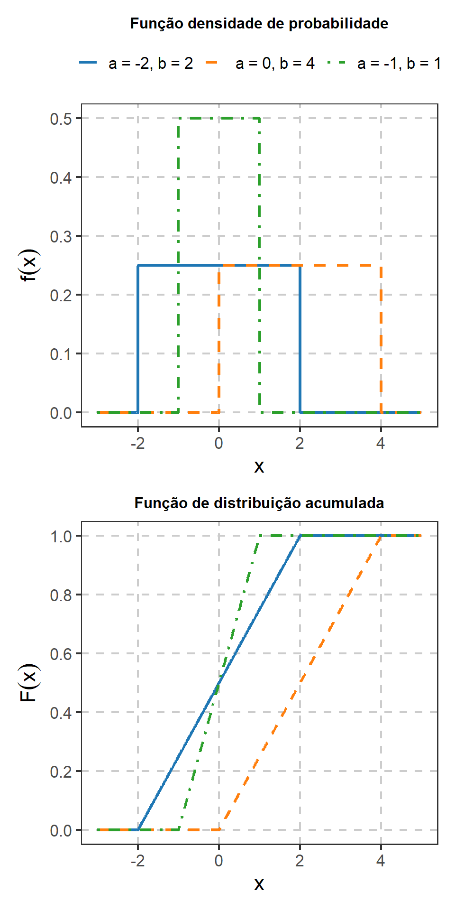
A Figura fig-uniforme-fdp-fda mostra separadamente os efeitos da posição e do comprimento do intervalo. As distribuições \(\operatorname{U}(-2,2)\) e \(\operatorname{U}(0,4)\) possuem a mesma amplitude, igual a \(4\), e consequentemente a mesma altura da densidade e a mesma variância. A segunda distribuição está apenas deslocada para a direita.
Para \(\operatorname{U}(-1,1)\), a amplitude é menor. Como a área total sob a densidade deve permanecer igual a \(1\), a redução do comprimento do intervalo aumenta a altura da densidade. Na função de distribuição, intervalos menores produzem um crescimento mais rápido de \(0\) até \(1\).
1.8.2 Distribuição exponencial
A distribuição exponencial é utilizada para representar tempos até a ocorrência de determinado evento em situações nas quais uma taxa de ocorrência constante constitui uma descrição adequada do mecanismo considerado.
Uma variável aleatória \(X\) possui distribuição exponencial com taxa
\[ \lambda>0 \]
quando
\[ X\sim\operatorname{Exp}(\lambda) \]
e sua densidade é
\[ f_X(x) = \lambda e^{-\lambda x} \mathbf 1_{(0,\infty)}(x). \]
O suporte é
\[ \mathcal X=(0,\infty). \]
A função de distribuição é
\[ F_X(x) = \begin{cases} 0, & x\leq0,\\[4pt] 1-e^{-\lambda x}, & x>0. \end{cases} \]
Consequentemente, para \(x\geq0\),
\[ P(X>x) = e^{-\lambda x}. \]
A esperança é
\[ E(X) = \frac{1}{\lambda}, \]
e a variância é
\[ \operatorname{Var}(X) = \frac{1}{\lambda^2}. \]
A função geradora de momentos é
\[ M_X(t) = \int_0^\infty e^{tx} \lambda e^{-\lambda x}\,dx. \]
Para
\[ t<\lambda, \]
temos
\[ M_X(t) = \frac{\lambda}{\lambda-t}. \]
O parâmetro \(\lambda\) é uma taxa. Seu inverso,
\[ \frac{1}{\lambda}, \]
corresponde ao tempo médio representado pelo modelo.
Considere uma agência bancária e seja \(X\) o tempo transcorrido entre a chegada de um cliente e o início de seu atendimento.
Se uma distribuição exponencial fornecer uma representação adequada para esses tempos,
\[ X\sim\operatorname{Exp}(\lambda), \]
em que \(\lambda>0\) é o parâmetro de taxa da distribuição.
Sob esse modelo, o tempo médio de espera é
\[ E(X) = \frac{1}{\lambda}. \]
Assim, valores maiores de \(\lambda\) correspondem a tempos médios de espera menores, enquanto valores menores de \(\lambda\) correspondem a tempos médios maiores.
Ao observar os tempos de espera de vários clientes, pode haver interesse inferencial em obter informação sobre \(\lambda\) ou, de forma equivalente, sobre o tempo médio \(1/\lambda\). Também poderia haver interesse em comparar esses tempos entre diferentes turnos, dias ou formas de organização do atendimento.
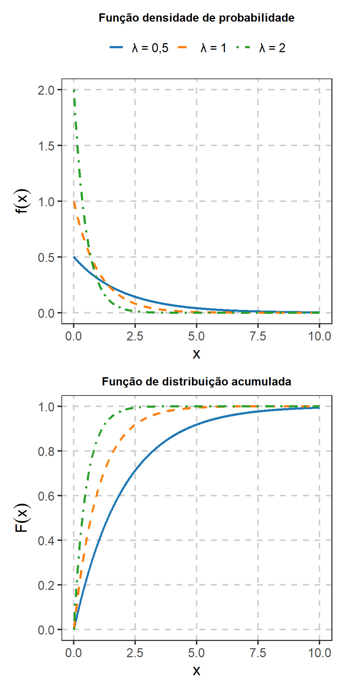
A Figura fig-exponencial-fdp-fda mostra que o aumento de \(\lambda\) concentra a distribuição em tempos menores. Essa relação decorre de
\[ E(X)=\frac{1}{\lambda}. \]
Para \(\lambda=2\), a densidade decresce rapidamente e a função de distribuição aproxima-se de \(1\) em valores relativamente pequenos de \(x\). Para \(\lambda=0{,}5\), tempos maiores recebem probabilidade mais elevada e a função de distribuição cresce mais lentamente.
1.8.2.1 Falta de memória
A distribuição exponencial possui a propriedade de falta de memória. Para
\[ s,t>0, \]
temos
\[ P(X>s+t\mid X>s) = P(X>t). \]
Assim, condicionado ao fato de que o evento ainda não ocorreu até o instante \(s\), o tempo adicional de espera possui a mesma distribuição do tempo de espera inicialmente considerado.
Essa propriedade é a versão contínua da falta de memória apresentada para a distribuição geométrica.
NotaParametrização
Neste livro, a distribuição exponencial será parametrizada pela taxa \(\lambda\).
Outra convenção utiliza a escala
\[ \beta=\frac{1}{\lambda}. \]
Nessa parametrização,
\[ E(X)=\beta. \]
As duas formas descrevem a mesma família de distribuições, mas as expressões envolvendo os parâmetros devem ser interpretadas segundo a convenção adotada.
1.8.3 Distribuição gama
A distribuição gama generaliza a distribuição exponencial e permite representar diferentes formas para variáveis aleatórias positivas.
Neste livro será utilizada a parametrização por forma
\[ \alpha>0 \]
e taxa
\[ \lambda>0. \]
Escrevemos
\[ X\sim\operatorname{Gama}(\alpha,\lambda) \]
quando sua densidade é
\[ f_X(x) = \frac{\lambda^\alpha}{\Gamma(\alpha)} x^{\alpha-1} e^{-\lambda x} \mathbf 1_{(0,\infty)}(x), \]
em que
\[ \Gamma(\alpha) = \int_0^\infty t^{\alpha-1}e^{-t}\,dt \]
é a função gama.
O suporte é
\[ \mathcal X=(0,\infty). \]
A esperança é
\[ E(X) = \frac{\alpha}{\lambda}, \]
e a variância é
\[ \operatorname{Var}(X) = \frac{\alpha}{\lambda^2}. \]
A função geradora de momentos é
\[ M_X(t) = \left( \frac{\lambda}{\lambda-t} \right)^\alpha, \qquad t<\lambda. \]
Quando
\[ \alpha=1, \]
temos
\[ \operatorname{Gama}(1,\lambda) = \operatorname{Exp}(\lambda). \]
Considere um procedimento bancário composto por três etapas sucessivas de atendimento. Suponha que os tempos necessários para completar cada etapa possam ser representados por variáveis exponenciais independentes com a mesma taxa \(\lambda\).
Se
\[ X_1,X_2,X_3 \overset{\mathrm{iid}}{\sim} \operatorname{Exp}(\lambda), \]
o tempo total
\[ T=X_1+X_2+X_3 \]
possui distribuição
\[ T\sim\operatorname{Gama}(3,\lambda). \]
Ao observar tempos totais de atendimento de vários clientes, pode haver interesse inferencial em obter informação sobre \(\lambda\) e, consequentemente, sobre
\[ E(T)=\frac{3}{\lambda}. \]
A distribuição gama permite, portanto, modelar um tempo positivo resultante da soma de vários tempos de espera.
A distribuição gama também pode ser considerada para variáveis positivas que apresentam assimetria à direita. Considere, por exemplo, o custo associado à execução de determinado procedimento, desde que as características empíricas e o mecanismo considerado sejam compatíveis com esse modelo.
Nesse caso, observações de diferentes unidades podem ser utilizadas para obter informação sobre os parâmetros que determinam a média e a dispersão da distribuição.
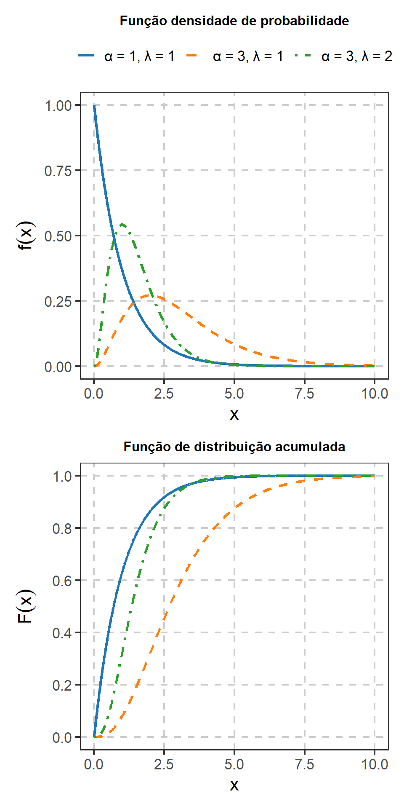
A Figura fig-gama-fdp-fda permite observar separadamente os efeitos dos parâmetros de forma e taxa. Para
\[ \alpha=1 \quad\text{e}\quad \lambda=1, \]
a distribuição gama coincide com a distribuição exponencial e sua densidade é decrescente.
Mantendo \(\lambda=1\) e aumentando \(\alpha\) de \(1\) para \(3\), a massa da distribuição desloca-se para valores maiores e a forma da densidade deixa de ser monotonicamente decrescente. Mantendo \(\alpha=3\) e aumentando \(\lambda\) de \(1\) para \(2\), a distribuição se concentra em valores menores, resultado compatível com
\[ E(X)=\frac{\alpha}{\lambda}. \]
1.8.3.1 Relação entre exponencial e gama
Se
\[ X_1,\ldots,X_n \overset{\mathrm{iid}}{\sim} \operatorname{Exp}(\lambda), \]
então
\[ S_n = \sum_{i=1}^nX_i \sim \operatorname{Gama}(n,\lambda). \]
Esse resultado pode ser obtido diretamente pelas funções geradoras de momentos. Como
\[ M_{X_i}(t) = \frac{\lambda}{\lambda-t}, \]
pela independência,
\[ M_{S_n}(t) = \left( \frac{\lambda}{\lambda-t} \right)^n. \]
Essa é a FGM de uma distribuição
\[ \operatorname{Gama}(n,\lambda). \]
Consequentemente,
\[ E(S_n) = \frac{n}{\lambda} \]
e
\[ \operatorname{Var}(S_n) = \frac{n}{\lambda^2}. \]
NotaForma e taxa
A literatura também utiliza a parametrização por forma \(\alpha\) e escala \(\beta\), com
\[ \beta=\frac{1}{\lambda}. \]
Nesse caso, a densidade pode ser escrita como
\[ f_X(x) = \frac{1}{ \Gamma(\alpha)\beta^\alpha } x^{\alpha-1} e^{-x/\beta} \mathbf 1_{(0,\infty)}(x). \]
A esperança e a variância tornam-se
\[ E(X)=\alpha\beta \]
e
\[ \operatorname{Var}(X)=\alpha\beta^2. \]
Neste livro será utilizada, salvo indicação contrária, a parametrização por forma e taxa.
1.8.4 Distribuição normal
A distribuição normal é uma família de distribuições contínuas simétricas determinada por um parâmetro de localização e outro de dispersão.
Uma variável aleatória \(X\) possui distribuição normal com média
\[ \mu\in\mathbb R \]
e variância
\[ \sigma^2>0 \]
quando
\[ X\sim N(\mu,\sigma^2) \]
e sua densidade é
\[ f_X(x) = \frac{1}{\sqrt{2\pi\sigma^2}} \exp \left\{ -\frac{(x-\mu)^2}{2\sigma^2} \right\} \mathbf 1_{\mathbb R}(x). \]
O suporte é
\[ \mathcal X=\mathbb R. \]
A esperança é
\[ E(X)=\mu, \]
e a variância é
\[ \operatorname{Var}(X)=\sigma^2. \]
O parâmetro \(\mu\) determina a localização da distribuição, enquanto \(\sigma\) determina sua dispersão.
A densidade é simétrica em torno de \(\mu\). Consequentemente,
\[ P(X\leq\mu)=\frac{1}{2}. \]
A função geradora de momentos é
\[ M_X(t) = \exp \left( \mu t + \frac{\sigma^2t^2}{2} \right), \qquad t\in\mathbb R. \]
Considere uma máquina utilizada para envasar determinado produto. Seja \(X\) o peso de uma unidade produzida.
Se uma distribuição normal fornecer uma representação adequada para os pesos,
\[ X\sim N(\mu,\sigma^2), \]
então \(\mu\) representa o peso médio do processo e \(\sigma\) representa sua dispersão.
Uma amostra de produtos pode ser utilizada para obter informação sobre \(\mu\), sobre \(\sigma^2\) ou sobre ambos. Por exemplo, pode haver interesse em avaliar se o peso médio está próximo do valor nominal especificado para o produto ou em quantificar a variabilidade do processo produtivo.
Considere \(X\) como determinada medida morfológica em indivíduos de uma população, como comprimento ou peso, em uma situação na qual a distribuição normal seja adequada.
As observações obtidas em uma amostra podem ser utilizadas para estudar a média populacional \(\mu\) e a variância \(\sigma^2\) dessa característica.
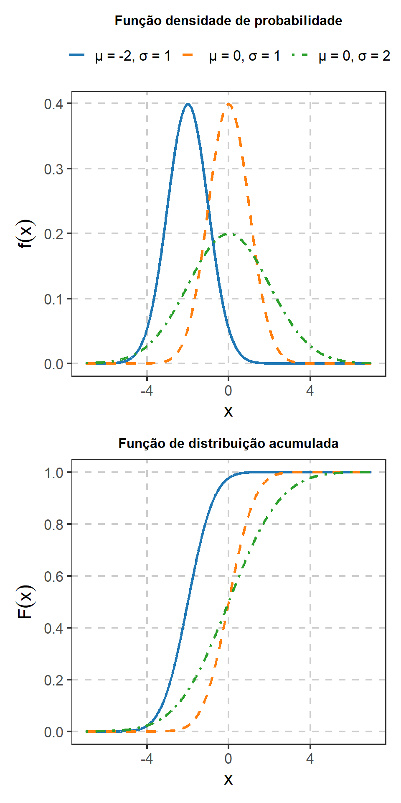
A Figura fig-normal-fdp-fda mostra separadamente os efeitos dos parâmetros \(\mu\) e \(\sigma\). Mantendo \(\sigma=1\), a alteração de \(\mu\) desloca a distribuição ao longo do eixo horizontal sem modificar sua forma. Mantendo \(\mu=0\), o aumento de \(\sigma\) produz maior dispersão e reduz a altura máxima da densidade.
Na função de distribuição, mudanças em \(\mu\) deslocam a curva horizontalmente, enquanto valores maiores de \(\sigma\) tornam a transição entre probabilidades próximas de \(0\) e de \(1\) mais gradual.
1.8.4.1 Padronização
Se
\[ X\sim N(\mu,\sigma^2), \]
então
\[ Z = \frac{X-\mu}{\sigma} \]
possui distribuição normal padrão,
\[ Z\sim N(0,1). \]
Consequentemente,
\[ P(X\leq x) = \Phi \left( \frac{x-\mu}{\sigma} \right), \]
em que \(\Phi\) representa a função de distribuição da normal padrão.
A transformação separa a posição e a escala da variável original e permite expressar probabilidades de qualquer distribuição normal em termos de uma única distribuição de referência.
1.8.4.2 Transformações lineares da distribuição normal
Se
\[ X\sim N(\mu,\sigma^2) \]
e
\[ Y=aX+b, \]
com \(a\neq0\), então
\[ Y \sim N \left( a\mu+b, a^2\sigma^2 \right). \]
Além disso, se
\[ X_1,\ldots,X_n \]
são independentes e
\[ X_i \sim N(\mu_i,\sigma_i^2), \]
então, para constantes \(a_1,\ldots,a_n\),
\[ \sum_{i=1}^n a_iX_i \sim N \left( \sum_{i=1}^n a_i\mu_i, \sum_{i=1}^n a_i^2\sigma_i^2 \right). \]
Em particular, se
\[ X_1,\ldots,X_n \overset{\mathrm{iid}}{\sim} N(\mu,\sigma^2), \]
então
\[ \overline X = \frac{1}{n} \sum_{i=1}^nX_i \]
possui distribuição
\[ \overline X \sim N \left( \mu, \frac{\sigma^2}{n} \right). \]
Esse resultado será retomado no estudo das distribuições amostrais.
1.8.5 Distribuição beta
A distribuição beta forma uma família de distribuições contínuas definidas no intervalo \((0,1)\). Seus dois parâmetros permitem representar diferentes padrões de simetria, assimetria e concentração.
Uma variável aleatória \(X\) possui distribuição beta com parâmetros
\[ \alpha>0 \qquad\text{e}\qquad \beta>0 \]
quando
\[ X\sim\operatorname{Beta}(\alpha,\beta) \]
e sua densidade é
\[ f_X(x) = \frac{1}{B(\alpha,\beta)} x^{\alpha-1} (1-x)^{\beta-1} \mathbf 1_{(0,1)}(x), \]
em que
\[ B(\alpha,\beta) = \int_0^1 x^{\alpha-1} (1-x)^{\beta-1}\,dx. \]
A função beta relaciona-se à função gama por
\[ B(\alpha,\beta) = \frac{ \Gamma(\alpha)\Gamma(\beta) }{ \Gamma(\alpha+\beta) }. \]
O suporte é
\[ \mathcal X=(0,1). \]
A esperança é
\[ E(X) = \frac{\alpha}{\alpha+\beta}, \]
e a variância é
\[ \operatorname{Var}(X) = \frac{ \alpha\beta }{ (\alpha+\beta)^2 (\alpha+\beta+1) }. \]
A função geradora de momentos existe para todo
\[ t\in\mathbb R, \]
mas sua expressão geral envolve funções especiais. Como essa forma não será utilizada nos desenvolvimentos posteriores, ela não será apresentada nesta revisão.
NotaValores nos extremos do intervalo
A distribuição beta apresentada nesta seção possui suporte
\[ (0,1). \]
Portanto, ela é adequada para variáveis contínuas que assumem valores estritamente entre \(0\) e \(1\).
Quando valores exatamente iguais a
\[ 0 \]
ou
\[ 1 \]
podem ocorrer com probabilidade positiva, a distribuição beta padrão não representa diretamente essa massa de probabilidade nos extremos. Nesses casos, pode ser necessário considerar outra especificação probabilística.
Essa distinção deve ser considerada, por exemplo, ao modelar proporções que possam assumir exatamente \(0\%\) ou \(100\%\).
Considere \(X\) como a proporção da área de uma parcela coberta por vegetação, expressa em escala de \(0\) a \(1\).
Se a distribuição beta fornecer uma representação adequada para a variação dessas proporções entre parcelas,
\[ X\sim\operatorname{Beta}(\alpha,\beta). \]
Observações realizadas em várias parcelas podem ser utilizadas para obter informação sobre \(\alpha\) e \(\beta\) ou sobre quantidades derivadas desses parâmetros, como a média
\[ E(X) = \frac{\alpha}{\alpha+\beta}. \]
Assim, o interesse pode estar na cobertura média da população de parcelas e na variabilidade existente entre elas.
A distribuição beta também pode ser considerada para índices contínuos naturalmente limitados ao intervalo \((0,1)\), desde que sua forma seja compatível com os dados e com o mecanismo considerado.
Nesse contexto, diferentes combinações de \(\alpha\) e \(\beta\) permitem representar distribuições simétricas ou assimétricas e diferentes níveis de concentração em determinadas regiões do intervalo.
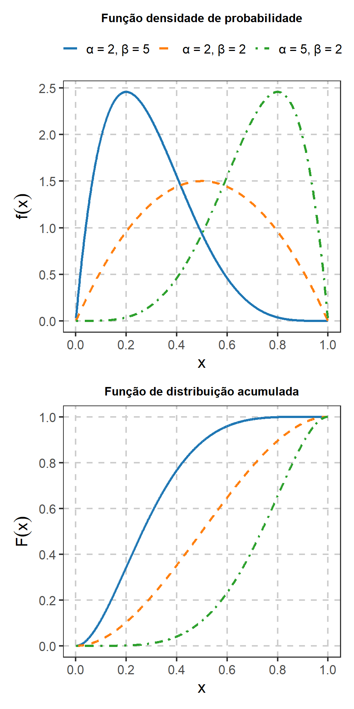
A Figura fig-beta-fdp-fda mostra a flexibilidade da distribuição beta. Para
\[ \alpha=\beta=2, \]
a distribuição é simétrica em torno de \(0{,}5\).
Quando
\[ \alpha=2 \quad\text{e}\quad \beta=5, \]
a massa está concentrada em valores menores. Quando os parâmetros são invertidos,
\[ \alpha=5 \quad\text{e}\quad \beta=2, \]
obtém-se uma distribuição espelhada, concentrada em valores maiores. Esse comportamento também aparece nas médias:
\[ E(X) = \frac{2}{7}, \qquad \frac{1}{2} \qquad\text{e}\qquad \frac{5}{7}, \]
respectivamente.
1.8.5.1 Casos particulares e simetria
Quando
\[ \alpha=\beta, \]
a distribuição beta é simétrica em torno de
\[ \frac{1}{2}. \]
Em particular,
\[ \operatorname{Beta}(1,1) = \operatorname{U}(0,1). \]
Assim, a distribuição uniforme padrão aparece como um caso particular da família beta.
1.8.6 Relações entre gama e beta
As distribuições gama e beta estão relacionadas por transformações de variáveis aleatórias independentes.
Se
\[ X \sim \operatorname{Gama}(\alpha,\lambda) \]
e
\[ Y \sim \operatorname{Gama}(\beta,\lambda), \]
independentes, então
\[ X+Y \sim \operatorname{Gama} (\alpha+\beta,\lambda), \]
enquanto
\[ \frac{X}{X+Y} \sim \operatorname{Beta}(\alpha,\beta). \]
A primeira relação decorre diretamente da função geradora de momentos. A segunda mostra como uma variável limitada ao intervalo \((0,1)\) pode ser construída a partir da razão entre duas variáveis gama positivas.
Essas relações serão úteis posteriormente para compreender algumas distribuições derivadas de funções de variáveis aleatórias.
1.8.7 Escolha entre alguns modelos contínuos
Os modelos contínuos apresentados correspondem a estruturas probabilísticas diferentes. A tabela resume alguns contextos que podem orientar sua interpretação.
| Situação representada | Modelo possível | Característica |
|---|---|---|
| valores equiprováveis em um intervalo | Uniforme | densidade constante |
| tempo até um evento sob taxa constante | Exponencial | suporte positivo e falta de memória |
| soma de tempos exponenciais ou variável positiva assimétrica | Gama | suporte positivo e diferentes formas |
| variável aproximadamente simétrica em torno de uma média | Normal | localização e dispersão em \(\mathbb R\) |
| proporção ou índice contínuo em \((0,1)\) | Beta | formas flexíveis em intervalo limitado |
A escolha de uma distribuição não depende apenas do suporte da variável. O mecanismo probabilístico, a forma da distribuição e as hipóteses utilizadas também precisam ser compatíveis com o fenômeno considerado.
NotaDistribuições derivadas do modelo normal
As distribuições qui-quadrado, \(t\) de Student e \(F\) estão relacionadas a funções de variáveis normais e gama. Elas não serão desenvolvidas nesta revisão. Sua apresentação será feita no capítulo Distribuições Amostrais, quando surgirem associadas a estatísticas construídas a partir de amostras normais.
1.9 Transformações de variáveis aleatórias
Transformações de variáveis aleatórias permitem construir novas variáveis a partir de variáveis cuja distribuição é conhecida.
Se
\[ Y=g(X), \]
a distribuição de \(Y\) é determinada pela distribuição de \(X\) e pela transformação \(g\).
Esse problema aparece em diferentes contextos. Uma estatística calculada a partir de observações é uma função de variáveis aleatórias, assim como muitas transformações utilizadas para alterar escala, estabilizar variância ou expressar uma quantidade de interesse de forma diferente.
Nesta revisão serão considerados o método da função de distribuição e a transformação de densidades no caso univariado. Transformações multivariadas e o determinante jacobiano serão retomados no capítulo Resultados Matemáticos e Assintóticos para Inferência.
1.9.1 Método da função de distribuição
Uma forma geral de determinar a distribuição de
\[ Y=g(X) \]
consiste em obter sua função de distribuição:
\[ F_Y(y) = P(Y\leq y). \]
Como
\[ Y=g(X), \]
temos
\[ F_Y(y) = P\{g(X)\leq y\}. \]
O problema é então reescrever o evento
\[ \{g(X)\leq y\} \]
em termos dos valores assumidos por \(X\).
Depois de obtida \(F_Y\), a função de massa ou a densidade de \(Y\) pode ser determinada quando necessário.
1.9.2 Transformação monótona
Suponha que \(X\) seja absolutamente contínua e que
\[ Y=g(X), \]
em que \(g\) é estritamente monótona e diferenciável no suporte de \(X\).
Nesse caso existe a função inversa
\[ x=g^{-1}(y). \]
A densidade de \(Y\) é
\[ f_Y(y) = f_X \{g^{-1}(y)\} \left| \frac{d}{dy} g^{-1}(y) \right|, \]
para \(y\) pertencente ao suporte da variável transformada (Rice, 2007, secs. 2.3 e 3.6; Ramachandran; Tsokos, 2021, sec. 3.4).
O termo
\[ \left| \frac{d}{dy} g^{-1}(y) \right| \]
corrige a alteração de escala produzida pela transformação.
Considere
\[ Y=aX+b, \qquad a\neq0. \]
A transformação inversa é
\[ x = \frac{y-b}{a}. \]
Logo,
\[ \left| \frac{dx}{dy} \right| = \frac{1}{|a|}. \]
Portanto,
\[ f_Y(y) = f_X \left( \frac{y-b}{a} \right) \frac{1}{|a|}. \]
Se
\[ X\sim N(\mu,\sigma^2), \]
essa transformação conduz a
\[ Y \sim N \left( a\mu+b, a^2\sigma^2 \right), \]
resultado já apresentado para a distribuição normal.
1.9.3 Exemplo de transformação entre modelos
Considere
\[ X\sim\operatorname{U}(0,1) \]
e defina
\[ Y=-\log X. \]
Como
\[ 0<X<1, \]
temos
\[ Y>0. \]
Para \(y>0\),
\[ F_Y(y) = P(Y\leq y). \]
Substituindo a definição de \(Y\),
\[ F_Y(y) = P(-\log X\leq y). \]
Como a função exponencial é crescente,
\[ -\log X\leq y \]
equivale a
\[ X\geq e^{-y}. \]
Portanto,
\[ F_Y(y) = P(X\geq e^{-y}). \]
Como \(X\) possui distribuição uniforme em \((0,1)\),
\[ F_Y(y) = 1-e^{-y}. \]
Para \(y\leq0\),
\[ F_Y(y)=0. \]
Assim,
\[ F_Y(y) = \begin{cases} 0, & y\leq0,\\[4pt] 1-e^{-y}, & y>0. \end{cases} \]
Essa é a função de distribuição de uma variável exponencial com taxa \(1\). Portanto,
\[ -\log X \sim \operatorname{Exp}(1). \]
O exemplo mostra que diferentes famílias probabilísticas podem estar relacionadas por transformações de variáveis aleatórias.
1.9.4 Transformações não monótonas
Quando \(g\) não é monotônica em todo o suporte de \(X\), um mesmo valor de \(Y\) pode corresponder a mais de um valor de \(X\).
Considere, por exemplo,
\[ Y=X^2. \]
Para
\[ y\geq0, \]
temos
\[ F_Y(y) = P(X^2\leq y). \]
O evento
\[ X^2\leq y \]
equivale a
\[ -\sqrt y \leq X \leq \sqrt y. \]
Logo,
\[ F_Y(y) = P \left( -\sqrt y \leq X \leq \sqrt y \right). \]
Se \(X\) é contínua,
\[ F_Y(y) = F_X(\sqrt y) - F_X(-\sqrt y), \]
para
\[ y\geq0. \]
Para
\[ y<0, \]
temos
\[ F_Y(y)=0, \]
pois \(X^2\) não pode assumir valores negativos.
A densidade de \(Y\), quando necessária, pode ser obtida diferenciando \(F_Y(y)\) em relação a \(y\).
NotaTransformações multivariadas
Para transformações de vetores aleatórios, a mudança de variáveis envolve o determinante da matriz jacobiana da transformação inversa.
Esse resultado exige ferramentas de cálculo multivariado e será retomado no capítulo Resultados Matemáticos e Assintóticos para Inferência, quando for necessário obter distribuições de funções de vetores aleatórios.
1.9.5 Transformações em problemas inferenciais
Transformações também aparecem quando a quantidade de interesse é uma função de um parâmetro.
Por exemplo, em uma distribuição exponencial parametrizada pela taxa \(\lambda\),
\[ E(X) = \frac{1}{\lambda}. \]
Um problema pode ser formulado em termos da taxa \(\lambda\), enquanto outro pode ter como quantidade de interesse o tempo médio
\[ \mu = \frac{1}{\lambda}. \]
Embora ambos descrevam o mesmo modelo probabilístico, a interpretação da quantidade desconhecida é diferente.
Posteriormente, métodos como a propriedade de invariância dos estimadores de máxima verossimilhança e o método delta permitirão estudar sistematicamente funções de parâmetros e de estimadores.
1.10 Quadro-síntese dos modelos probabilísticos
Os modelos apresentados ao longo deste capítulo diferem quanto ao suporte, aos parâmetros e ao mecanismo probabilístico utilizado para representar a variável observada. As tabelas seguintes reúnem suas principais características para consulta.
A escolha de uma distribuição não deve ser determinada apenas pela semelhança entre o formato de um gráfico e a forma de uma densidade ou função de massa conhecida. O suporte da variável, o mecanismo que produz os dados, as relações de dependência e o significado dos parâmetros também precisam ser considerados.
1.10.1 Modelos discretos univariados
| Distribuição | Suporte | Parâmetro(s) | \(E(X)\) | \(\operatorname{Var}(X)\) |
|---|---|---|---|---|
| Uniforme discreta | \(\{1,\ldots,m\}\) | \(m\) | \(\dfrac{m+1}{2}\) | \(\dfrac{m^2-1}{12}\) |
| Bernoulli | \(\{0,1\}\) | \(p\) | \(p\) | \(p(1-p)\) |
| Binomial | \(\{0,\ldots,n\}\) | \(n,p\) | \(np\) | \(np(1-p)\) |
| Hipergeométrica | \(\{\max(0,n-N+M),\) \(\ldots,\min(n,M)\}\) | \(N,M,n\) | \(np\), \(p=M/N\) | \(np(1-p)\dfrac{N-n}{N-1}\) |
| Geométrica | \(\{1,2,\ldots\}\) | \(p\) | \(\dfrac{1}{p}\) | \(\dfrac{1-p}{p^2}\) |
| Binomial negativa | \(\{r,r+1,\ldots\}\) | \(r,p\) | \(\dfrac{r}{p}\) | \(\dfrac{r(1-p)}{p^2}\) |
| Poisson | \(\{0,1,2,\ldots\}\) | \(\lambda\) | \(\lambda\) | \(\lambda\) |
1.10.2 Modelos contínuos univariados
| Distribuição | Suporte | Parâmetro(s) | \(E(X)\) | \(\operatorname{Var}(X)\) |
|---|---|---|---|---|
| Uniforme | \((a,b)\) | \(a,b\) | \(\dfrac{a+b}{2}\) | \(\dfrac{(b-a)^2}{12}\) |
| Exponencial | \((0,\infty)\) | \(\lambda\) | \(\dfrac{1}{\lambda}\) | \(\dfrac{1}{\lambda^2}\) |
| Gama | \((0,\infty)\) | \(\alpha,\lambda\) | \(\dfrac{\alpha}{\lambda}\) | \(\dfrac{\alpha}{\lambda^2}\) |
| Normal | \(\mathbb R\) | \(\mu,\sigma^2\) | \(\mu\) | \(\sigma^2\) |
| Beta | \((0,1)\) | \(\alpha,\beta\) | \(\dfrac{\alpha}{\alpha+\beta}\) | \(\dfrac{\alpha\beta}{(\alpha+\beta)^2(\alpha+\beta+1)}\) |
1.10.3 Funções geradoras de momentos
As funções geradoras de momentos apresentadas no capítulo podem ser reunidas em uma tabela de referência.
| Distribuição | \(M_X(t)\) | Condição |
|---|---|---|
| Uniforme discreta em \(\{1,\ldots,m\}\) | \(\dfrac{1}{m}\displaystyle\sum_{x=1}^m e^{tx}\) | \(t\in\mathbb R\) |
| Bernoulli\((p)\) | \(1-p+pe^t\) | \(t\in\mathbb R\) |
| Binomial\((n,p)\) | \((1-p+pe^t)^n\) | \(t\in\mathbb R\) |
| Hipergeométrica\((N,M,n)\) | \(\displaystyle\sum_{x\in\mathcal X}e^{tx}p_X(x)\) | \(t\in\mathbb R\) |
| Geométrica\((p)\) | \(\dfrac{pe^t}{1-(1-p)e^t}\) | \(t<-\log(1-p)\) |
| Binomial negativa\((r,p)\) | \(\left[\dfrac{pe^t}{1-(1-p)e^t}\right]^r\) | \(t<-\log(1-p)\) |
| Poisson\((\lambda)\) | \(\exp\{\lambda(e^t-1)\}\) | \(t\in\mathbb R\) |
| Uniforme\((a,b)\) | \(\dfrac{e^{bt}-e^{at}}{t(b-a)}\) | \(t\neq0\); \(M_X(0)=1\) |
| Exponencial\((\lambda)\) | \(\dfrac{\lambda}{\lambda-t}\) | \(t<\lambda\) |
| Gama\((\alpha,\lambda)\) | \(\left(\dfrac{\lambda}{\lambda-t}\right)^\alpha\) | \(t<\lambda\) |
| Normal\((\mu,\sigma^2)\) | \(\exp\left(\mu t+\dfrac{\sigma^2t^2}{2}\right)\) | \(t\in\mathbb R\) |
A distribuição beta não aparece nessa tabela porque sua função geradora de momentos, embora exista para todo \(t\in\mathbb R\), envolve uma função especial que não será utilizada nos capítulos seguintes.
1.11 Relações entre os principais modelos
As relações desenvolvidas ao longo do capítulo podem ser reunidas em um mapa de referência. Elas decorrem de diferentes mecanismos: soma de variáveis independentes, mudança no esquema de amostragem, generalização de um modelo, transformação ou passagem ao limite.
1.11.1 Modelos discretos
Um ensaio Bernoulli representa um único resultado binário,
\[ X_i \sim \operatorname{Ber}(p). \]
A soma de ensaios Bernoulli independentes com a mesma probabilidade de sucesso produz a distribuição binomial:
\[ \boxed{ \operatorname{Ber}(p) \overset{\text{soma de }n\text{ ensaios}}{\longrightarrow} \operatorname{Binom}(n,p) } \]
Quando a contagem de sucessos é realizada em uma amostra retirada sem reposição de uma população finita, o mecanismo muda:
\[ \boxed{ \text{contagem de sucessos sem reposição} \longrightarrow \operatorname{Hiper}(N,M,n) } \]
A distribuição geométrica representa o número de ensaios até o primeiro sucesso, enquanto a binomial negativa estende esse mecanismo até o \(r\)-ésimo sucesso:
\[ \boxed{ \operatorname{Geo}(p) = \operatorname{BN}(1,p) } \]
e, de forma mais geral,
\[ \boxed{ \operatorname{Geo}(p) \overset{r\text{ sucessos}}{\longrightarrow} \operatorname{BN}(r,p). } \]
A distribuição de Poisson pode surgir como limite de distribuições binomiais quando o número de ensaios cresce, a probabilidade individual de sucesso diminui e o número esperado de sucessos converge para \(\lambda\):
\[ \boxed{ \operatorname{Binom}(n,p_n) \overset{ n\to\infty,\; p_n\to0,\; np_n\to\lambda }{\longrightarrow} \operatorname{Poisson}(\lambda). } \]
A distribuição multinomial estende a estrutura binomial de duas categorias para \(m\) categorias:
\[ \boxed{ \operatorname{Binom} \overset{\text{mais de duas categorias}}{\longrightarrow} \operatorname{Multinomial}. } \]
1.11.2 Modelos contínuos
A distribuição exponencial é um caso particular da distribuição gama:
\[ \boxed{ \operatorname{Exp}(\lambda) = \operatorname{Gama}(1,\lambda). } \]
Além disso, a soma de variáveis exponenciais independentes com a mesma taxa produz uma variável gama:
\[ \boxed{ X_1,\ldots,X_n \overset{\mathrm{iid}}{\sim} \operatorname{Exp}(\lambda) \quad\Longrightarrow\quad \sum_{i=1}^nX_i \sim \operatorname{Gama}(n,\lambda). } \]
A distribuição uniforme padrão é um caso particular da família beta:
\[ \boxed{ \operatorname{U}(0,1) = \operatorname{Beta}(1,1). } \]
Se
\[ X\sim\operatorname{Gama}(\alpha,\lambda) \]
e
\[ Y\sim\operatorname{Gama}(\beta,\lambda) \]
são independentes, então
\[ \boxed{ X+Y \sim \operatorname{Gama}(\alpha+\beta,\lambda) } \]
e
\[ \boxed{ \frac{X}{X+Y} \sim \operatorname{Beta}(\alpha,\beta). } \]
1.11.3 Leitura do mapa
As relações anteriores possuem naturezas diferentes:
| Relação | Mecanismo |
|---|---|
| Bernoulli \(\rightarrow\) Binomial | soma de ensaios independentes |
| Binomial \(\leftrightarrow\) Hipergeométrica | alteração do mecanismo de amostragem |
| Geométrica \(\rightarrow\) Binomial negativa | extensão do número de sucessos |
| Binomial \(\rightarrow\) Poisson | resultado limite |
| Binomial \(\rightarrow\) Multinomial | generalização do número de categorias |
| Exponencial \(\rightarrow\) Gama | caso particular e soma de variáveis independentes |
| Uniforme \(\rightarrow\) Beta | caso particular |
| Gama \(\rightarrow\) Beta | transformação de variáveis independentes |
O mapa mostra que os modelos probabilísticos não constituem uma coleção isolada de fórmulas. Suas relações decorrem dos mecanismos utilizados para produzir, combinar ou transformar variáveis aleatórias.
1.12 Síntese
O conteúdo deste capítulo pode ser organizado em seis componentes.
O primeiro corresponde à estrutura básica da Probabilidade. Eventos, probabilidade condicional, lei da probabilidade total, teorema de Bayes e independência permitem descrever relações entre acontecimentos aleatórios e incorporar informações condicionais.
O segundo reúne variáveis aleatórias e suas distribuições. A função de distribuição caracteriza a distribuição de uma variável aleatória, enquanto a função de massa de probabilidade e a densidade descrevem, respectivamente, variáveis discretas e absolutamente contínuas. O suporte, representado por \(\mathcal X\) para uma variável \(X\), identifica os valores admissíveis sob a distribuição considerada. A função indicadora permite incorporar esse suporte diretamente às expressões probabilísticas e também representar contagens e proporções.
O terceiro corresponde a esperança, variância e momentos. Essas quantidades descrevem características da distribuição de uma variável aleatória e permitem estudar transformações lineares, somas e combinações de variáveis.
O quarto reúne distribuições conjuntas e dependência. Distribuições marginais e condicionais descrevem diferentes aspectos de uma distribuição conjunta, enquanto covariância e correlação quantificam formas de associação. A independência estabelece uma condição probabilística mais forte e, quando várias variáveis são simultaneamente independentes e possuem a mesma distribuição, obtém-se a estrutura i.i.d., que será utilizada posteriormente na definição usual de amostras aleatórias. Esperança e variância condicionais também permitem decompor momentos por meio das leis da esperança total e da variância total.
O quinto componente corresponde à função geradora de momentos e às transformações de variáveis aleatórias. Quando existe em uma vizinhança de zero, a função geradora de momentos permite obter momentos, identificar distribuições e estudar somas de variáveis independentes. As transformações permitem determinar a distribuição de novas variáveis construídas a partir de variáveis com distribuição conhecida.
O sexto reúne os modelos probabilísticos apresentados no capítulo. As distribuições uniforme discreta, Bernoulli, binomial, hipergeométrica, geométrica, binomial negativa, Poisson, uniforme contínua, exponencial, gama, normal, beta e multinomial representam diferentes mecanismos probabilísticos. Sua utilização depende do tipo de variável, de seu suporte, do mecanismo que produz os dados e da interpretação de seus parâmetros.
As situações inferenciais apresentadas ao longo do capítulo mostram como parâmetros desses modelos podem representar quantidades de interesse em problemas posteriores. Por exemplo:
- em um modelo Bernoulli ou binomial, \(p\) pode representar uma proporção populacional;
- em um modelo hipergeométrico, \(M\) pode representar uma quantidade desconhecida de unidades com determinada característica em uma população finita;
- em um modelo Poisson, \(\lambda\) representa o número esperado de ocorrências na exposição considerada e, quando \(\lambda=\rho t\), \(\rho\) representa a taxa média por unidade de exposição;
- em um modelo exponencial, \(1/\lambda\) representa o valor esperado da variável, podendo corresponder, por exemplo, a um tempo médio;
- em um modelo normal, \(\mu\) e \(\sigma^2\) descrevem localização e variabilidade;
- em um modelo multinomial, \(p_1,\ldots,p_m\) descrevem as probabilidades associadas às diferentes categorias.
Até este ponto, a direção predominante foi partir de um modelo probabilístico e estudar suas consequências:
\[ \boxed{ \text{modelo probabilístico} \longrightarrow \text{comportamento das variáveis aleatórias}. } \]
Na Inferência Estatística, a questão será diferente. Os dados serão observados, enquanto uma ou mais características do modelo que os produziu serão desconhecidas. A direção do problema passa, então, a ser
\[ \boxed{ \text{dados observados} \longrightarrow \text{informação sobre quantidades desconhecidas do modelo}. } \]
Essa passagem exigirá conceitos como população, parâmetro, amostra, estatística, estimador, modelo estatístico e verossimilhança. Antes de introduzi-los formalmente, o próximo capítulo reúne as ferramentas matemáticas e assintóticas utilizadas nos desenvolvimentos posteriores. Em seguida, o capítulo Fundamentos da Inferência Estatística formulará propriamente o problema inferencial.
1.13 Exercícios de consolidação
NotaExercício 1
Considere eventos \(A\) e \(B\) tais que \(P(A)=0{,}4\), \(P(B)=0{,}5\) e \(P(A\cap B)=0{,}2\).
Calcule \(P(A\mid B)\) e \(P(B\mid A)\).
Verifique se \(A\) e \(B\) são independentes.
Explique a diferença entre eventos independentes e eventos mutuamente exclusivos.
Mostre que dois eventos mutuamente exclusivos com probabilidades positivas não podem ser independentes.
NotaExercício 2
Uma condição ocorre em \(1\%\) de determinada população. Um teste apresenta sensibilidade de \(90\%\) e especificidade de \(95\%\).
Calcule a probabilidade de uma pessoa apresentar a condição dado que recebeu resultado positivo no teste.
Identifique, no cálculo, o papel da prevalência da condição, da sensibilidade e da especificidade.
NotaExercício 3
Para cada situação abaixo:
- defina a variável aleatória;
- indique seu suporte \(\mathcal X\);
- proponha uma distribuição probabilística plausível entre as estudadas neste capítulo;
- identifique o significado dos parâmetros;
- indique a característica do mecanismo que sustenta a escolha do modelo.
Considere:
presença ou ausência de determinada característica em uma unidade selecionada;
número de unidades com essa característica entre \(50\) observações independentes;
número de unidades com a característica em uma amostra retirada sem reposição de uma população finita;
número de chamadas recebidas por uma central durante uma hora;
número de tentativas necessárias até o primeiro sucesso;
número de tentativas necessárias até o quinto sucesso;
tempo de espera até a ocorrência de determinado evento, admitindo uma taxa constante;
duração total de várias etapas positivas e independentes com a mesma taxa;
medida contínua aproximadamente simétrica em torno de um valor de localização;
proporção contínua que assume valores estritamente entre \(0\) e \(1\).
Em cada caso, a distribuição proposta deve ser entendida como um modelo plausível, cuja adequação dependeria do fenômeno observado.
NotaExercício 4
Considere \(X\sim\operatorname{Uniforme}(0,\theta)\), com \(\theta>0\).
Escreva o suporte de \(X\) utilizando a notação \(\mathcal X_\theta\).
Determine \(E(X)\) e \(\operatorname{Var}(X)\).
Explique como o suporte se modifica quando \(\theta\) varia.
Suponha que tenha sido observado um valor \(x_0>0\). Quais valores de \(\theta\) são incompatíveis com essa observação? Justifique.
O objetivo é reconhecer uma característica particular desse modelo: o suporte depende do parâmetro.
NotaExercício 5
Considere duas formas de retirar \(20\) bolas de uma urna contendo \(100\) bolas, das quais \(30\) são vermelhas:
- cada bola retirada é devolvida à urna antes da retirada seguinte;
- as bolas são retiradas sem reposição.
Defina \(X\) como o número de bolas vermelhas observadas.
Especifique a distribuição de \(X\) em cada mecanismo.
Compare \(E(X)\) nos dois casos.
Compare \(\operatorname{Var}(X)\) nos dois casos.
Explique a origem da diferença entre as variâncias.
Relacione essa diferença à independência, ou não, das retiradas.
NotaExercício 6
Considere
\[ X_1,\ldots,X_n \overset{\mathrm{iid}}{\sim} F. \]
Explique separadamente o significado de independentes e identicamente distribuídas.
Explique por que a condição i.i.d. não significa que \(X_1=\cdots=X_n\).
Suponha que a distribuição comum seja absolutamente contínua, com densidade \(f_X\). Escreva a densidade conjunta de \((X_1,\ldots,X_n)\).
Suponha ainda que \(E(X_i)=\mu\) e \(\operatorname{Var}(X_i)=\sigma^2\), para todo \(i\), e defina
\[ \overline X_n = \frac{1}{n}\sum_{i=1}^nX_i. \]
Obtenha \(E(\overline X_n)\) e \(\operatorname{Var}(\overline X_n)\).
- Explique por que a estrutura i.i.d. será particularmente útil quando forem estudadas amostras aleatórias.
NotaExercício 7
Considere a função de massa de probabilidade conjunta:
| \(X\) | \(Y=0\) | \(Y=1\) |
|---|---|---|
| \(0\) | \(0{,}10\) | \(0{,}20\) |
| \(1\) | \(0{,}30\) | \(0{,}40\) |
Identifique o suporte conjunto de \((X,Y)\) e os suportes marginais de \(X\) e \(Y\).
Obtenha as funções de massa marginais de \(X\) e \(Y\).
Calcule \(P(X=1\mid Y=1)\).
Verifique se \(X\) e \(Y\) são independentes.
Calcule \(E(X)\), \(E(Y)\) e \(E(XY)\).
Determine \(\operatorname{Cov}(X,Y)\).
NotaExercício 8
Considere uma variável \(Y\) que assume os valores \(0\) e \(1\), com \(P(Y=1)=p\). Suponha que
\[ E(X\mid Y=0)=\mu_0, \qquad E(X\mid Y=1)=\mu_1 \]
e
\[ \operatorname{Var}(X\mid Y=0)=\sigma_0^2, \qquad \operatorname{Var}(X\mid Y=1)=\sigma_1^2. \]
Utilize a lei da esperança total para obter \(E(X)\).
Utilize a lei da variância total para obter \(\operatorname{Var}(X)\).
Mostre que
\[ \operatorname{Var}(X) = (1-p)\sigma_0^2 + p\sigma_1^2 + p(1-p)(\mu_1-\mu_0)^2. \]
- Interprete as duas fontes de variabilidade presentes nessa decomposição.
NotaExercício 9
Mostre que, se \(X\) e \(Y\) são independentes e possuem segundos momentos finitos, então \(\operatorname{Cov}(X,Y)=0\).
A recíproca é verdadeira? Apresente um exemplo de duas variáveis aleatórias com covariância zero que não sejam independentes.
NotaExercício 10
Considere
\[ (X_1,X_2,X_3) \sim \operatorname{Multinomial}(20;0{,}2,0{,}3,0{,}5). \]
Obtenha \(E(X_1)\), \(E(X_2)\) e \(E(X_3)\).
Determine \(\operatorname{Var}(X_1)\), \(\operatorname{Var}(X_2)\) e \(\operatorname{Var}(X_3)\).
Calcule \(\operatorname{Cov}(X_1,X_2)\).
Determine a distribuição marginal de \(X_3\).
Explique por que \(X_1\), \(X_2\) e \(X_3\) não são independentes.
Relacione essa dependência à restrição \(X_1+X_2+X_3=20\).
NotaExercício 11
Efetue os seguintes cálculos utilizando as propriedades das distribuições estudadas no capítulo.
Se \(X\sim\operatorname{Binomial}(20,0{,}3)\), obtenha \(E(X)\), \(\operatorname{Var}(X)\) e \(P(X\leq4)\).
Se \(Y\sim\operatorname{Poisson}(4)\), obtenha \(P(Y=0)\) e \(P(Y>5)\).
Se \(Z\sim N(100,15^2)\), obtenha \(P(85<Z<115)\) e o valor \(c\) tal que \(P(Z\leq c)=0{,}975\).
NotaExercício 12
Considere
\[ X_1,\ldots,X_n \overset{\mathrm{iid}}{\sim} \operatorname{Bernoulli}(p). \]
Obtenha a função geradora de momentos de \(X_i\).
Utilize a função geradora de momentos para recuperar \(E(X_i)\) e \(\operatorname{Var}(X_i)\).
Defina \(S_n=\sum_{i=1}^nX_i\). Utilize funções geradoras de momentos para identificar a distribuição de \(S_n\).
Mostre que \(S_n/n=\overline X_n\) representa a proporção de sucessos.
Obtenha \(E(S_n/n)\) e \(\operatorname{Var}(S_n/n)\).
Esse resultado será retomado posteriormente no estudo da proporção amostral.
NotaExercício 13
Utilize funções geradoras de momentos para estabelecer as seguintes relações.
- Se \(X_1,\ldots,X_k\) são independentes e \(X_i\sim\operatorname{Poisson}(\lambda_i)\), identifique a distribuição de
\[ S = \sum_{i=1}^kX_i. \]
- Se
\[ Y_1,\ldots,Y_n \overset{\mathrm{iid}}{\sim} \operatorname{Exponencial}(\lambda), \]
identifique a distribuição de \(T_n=\sum_{i=1}^nY_i\).
No item anterior, obtenha \(E(T_n)\) e \(\operatorname{Var}(T_n)\).
Compare os resultados dos itens (a) e (b): em ambos os casos estamos somando variáveis independentes, mas a família da distribuição resultante se comporta da mesma forma? Explique.
Indique o papel da independência na propriedade multiplicativa das funções geradoras de momentos.
NotaExercício 14
Considere \(X\sim\operatorname{Exponencial}(\lambda)\) e \(Y=cX\), com \(c>0\).
Determine o suporte \(\mathcal Y\) de \(Y\).
Obtenha a função de distribuição de \(Y\).
Obtenha a densidade de \(Y\) pelo método da transformação.
Identifique a distribuição resultante e seu parâmetro.
NotaExercício 15
Considere \(X\sim N(0,1)\) e defina \(Y=X^2\).
Determine o suporte \(\mathcal Y\) de \(Y\).
Para \(y>0\), escreva o evento \(\{Y\leq y\}\) em termos de \(X\).
Obtenha a função de distribuição de \(Y\).
Diferencie a expressão obtida para encontrar sua densidade.
A distribuição resultante será identificada posteriormente no estudo das distribuições amostrais associadas ao modelo normal.
NotaExercício 16
Escolha uma situação aplicada de uma área de interesse e formule um modelo probabilístico para uma variável observável.
Em sua resposta:
- defina claramente a variável aleatória \(X\);
- indique seu suporte \(\mathcal X\);
- proponha uma distribuição probabilística;
- descreva o mecanismo que justifica a escolha dessa distribuição;
- interprete os parâmetros do modelo no contexto do problema;
- indique qual parâmetro ou função dos parâmetros poderia constituir uma quantidade desconhecida de interesse;
- se várias observações da variável fossem obtidas, discuta se a hipótese de que sejam independentes e identicamente distribuídas seria plausível e justifique.
O objetivo é formular e interpretar a estrutura probabilística do problema. Os procedimentos utilizados para obter informação sobre as quantidades desconhecidas a partir dos dados serão desenvolvidos nos capítulos de Inferência Estatística.
CHIHARA, Laura M.; HESTERBERG, Tim C. Mathematical Statistics with Resampling and R. 3. ed. Hoboken, NJ: John Wiley & Sons, 2022.
DANTAS, Carlos Alberto Barbosa. Probabilidade: um curso introdutório. São Paulo: EDUSP, 1997.
MAGALHÃES, Marcos Nascimento. Probabilidade e Variáveis Aleatórias. São Paulo: EDUSP, 2006.
MEYER, Paul L. Probabilidade e Aplicações à Estatística. 2. ed. Rio de Janeiro: Livros Técnicos e Científicos, 1983.
RAMACHANDRAN, Kandethody M.; TSOKOS, Chris P. Mathematical Statistics with Applications in R. 3. ed. London: Academic Press, 2021.
RICE, John A. Mathematical Statistics and Data Analysis. 3. ed. Belmont, CA: Duxbury Press, 2007.
ROSS, Sheldon M. A First Course in Probability. 7. ed. Upper Saddle River, NJ: Prentice Hall, 2006.